Phần I · Bài 1 — Cơ chế 'Màn trập' vỏ não trong tri giác điện ảnh (Freeman)
các mẫu hình không-thời gian của điện vỏ não đồ (ECoG) được ghi từ hệ khứu giác trong trạng thái thức tỉnh và học tập củng cố. Các mẫu hình cơ bản tương tự cũng xuất hiện trong các hệ giác quan của vỏ não mới. Phần 3 giới thiệu sự kích thích lẫn nhau và phản hồi dương giúp tạo ra và ổn định hoạt động nền của vỏ não. Phần 4 giới thiệu sự ức chế và phản hồi âm giúp tạo ra và ổn định các dao động mang của bó sóng. Khái niệm về tính lưỡng ổn định thông qua các thay đổi phụ thuộc đầu vào trong độ lợi phản hồi phi tuyến được phát triển, giúp chuyển đổi các vùng vỏ não giác quan giữa trạng thái tiếp nhận và trạng thái truyền phát. Phần 5 tóm tắt bằng chứng về sự ổn định có điều kiện tại tính tới hạn tự tổ chức, qua đó các chuyển trạng thái giữa hai trạng thái này của vỏ não có thể được mô tả như các chuyển pha trong trạng thái siêu ổn định gần giả cân bằng. Phần 6 xây dựng một giản đồ pha nhiệt động lực học và các chuyển pha cho vỏ não ở xa trạng thái cân bằng, tóm tắt các hoạt động của vỏ não trong chu trình hành động – tri giác [16]. Phần 7 mô tả 'màn trập', thảo luận ý nghĩa của nó trong tri giác và tóm tắt chương.
2 Hoạt động gợi và hoạt động cảm ứng trong hệ khứu giác và các hệ giác quan vỏ não mới
Đặc tính sáng tạo của động lực học phi tuyến không dễ dàng bộc lộ trong các cơ chế phản hồi cân bằng nội môi của các phản xạ não bộ, vốn đảm bảo sự ổn định của chức năng não bằng cách giữ môi trường bên trong (nhiệt độ, áp suất, thể tích và thành phần hóa học) của não gần mức tối ưu bất chấp những biến động của môi trường. Nó trở nên rõ ràng khi mô hình hóa tri giác, vốn đòi hỏi sự tương tác sáng tạo với môi trường bên ngoài để đạt được các mục tiêu sống. Một ví dụ tương đối đơn giản đến từ nghiên cứu hoạt động thần kinh trong hành khứu giác. Hệ khứu giác là một mô-đun bán tự chủ tương tác với các phần khác của não trước bằng cách trao đổi thông tin thần kinh. Nó nhận đầu vào giác quan và cả các điều khiển ly tâm thông qua việc giải phóng các chất điều biến thần kinh từ các nhân thân não. Một hỗn hợp được phối hợp nhịp nhàng gồm các amin thần kinh và neuropeptide [50] điều biến khả năng tiếp nhận của hành khứu giác và vỏ não khứu giác trong trạng thái thức tỉnh, tìm kiếm và học tập (Hình 1).
Hoạt động dao động nội sinh vẫn tiếp diễn sau khi hệ khứu giác được cô lập về mặt phẫu thuật khỏi phần còn lại của não, điều này cho thấy các chức năng cơ bản của nó mang tính tự tổ chức. Tuy nhiên, hoạt động hỗn loạn không tuần hoàn của nó biến mất khi các bộ phận của nó bị ngắt kết nối về mặt phẫu thuật [14], cho thấy hoạt động không tuần hoàn là một đặc tính toàn cục chứ không phải do sự cuốn theo của các tế bào thần kinh đơn lẻ đóng vai trò là bộ tạo hỗn loạn. Điều này rất quan trọng, bởi vì các kích thích được nhận diện trong tri giác là các mẫu hình không-thời gian, chẳng hạn như biểu cảm khuôn mặt, một đoạn nhạc, độ vừa vặn của chiếc áo khoác trên thân người, v.v. Hoạt động của thụ thể giác quan mà chúng kích thích hoặc ức chế được đặc trưng bởi các mối quan hệ không gian giữa từng phần và mọi phần khác của một mẫu hình, do đó các yếu tố quyết định của tri giác trong chức năng vỏ não giác quan cũng phải mang tính toàn cục, chứ không cục bộ như ở các tế bào thần kinh phát hiện đặc trưng.
Các bản ghi đồng thời hoạt động ECoG từ các mảng gồm 64 điện cực đặt trên hành khứu giác và vỏ não của thỏ chứng minh tính kết hợp không gian của các dao động ECoG mang các mẫu hình không-thời gian. Ở mọi đối tượng, các bản ghi
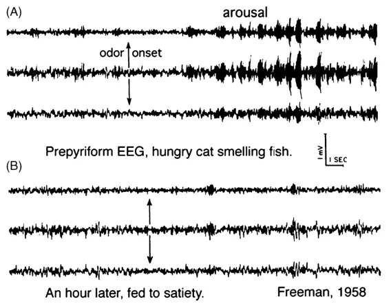
Hình 1 (A) một con mèo bị bỏ đói đang nghỉ ngơi bị kích thích bởi mùi cá và tìm kiếm nó bằng cách đánh hơi, (B) sau khi ăn no nê thì không có sự kích thích thức tỉnh [14], Hình 7.17, tr. 442 cho thấy một dao động chung trong điện thế vỏ não trên toàn bộ mảng ở cùng một tần số tức thời [29, 32, 53]. Sự thăng giáng đóng vai trò như một sóng mang cho tri giác thông qua các mẫu hình không gian của điều biến biên độ (AM) (Hình 2, trái). Các mẫu hình không-thời gian của tần số phát xung của các tế bào thần kinh hành khứu giác và vỏ não tương quan với các mẫu hình AM. Dạng sóng mang chung thường không tuần hoàn và không thể dự đoán, phản ánh động lực học hỗn loạn của các vùng vỏ não giác quan.
Các mẫu hình AM không gian trong các vùng vỏ não giác quan không thể đại diện theo nghĩa đen cho các kích thích được truyền đến chúng qua các đường dẫn truyền đầu vào giác quan, bởi vì chúng thiếu tính bất biến đối với các kích thích không đổi [5, 18, 29, 32, 48, 50, 53, 57]. Thay vào đó, chúng thay đổi theo những thay đổi về củng cố, việc học các kích thích có điều kiện (CS) mới khác trong quá trình điều kiện hóa nối tiếp, và các thay đổi ngữ cảnh khác gắn liền với kích thích trong suốt thời gian huấn luyện để phản ứng với chúng—nói ngắn gọn là ý nghĩa của CS, vốn độc nhất đối với từng cá thể cũng như chính các mẫu hình AM vậy. Những đặc tính này cũng đã được tìm thấy trong ECoG của các vùng vỏ não mới thị giác, thính giác và cảm giác thân thể, và chúng đúng ở cả dải tần beta và gamma. Do dạng sóng ở mọi nơi đều tương tự nhau, mẫu hình AM của mỗi khung hình có thể được biểu diễn bằng biểu đồ đường đồng mức (Hình 2, trái) của 64 biên độ bình phương trung bình căn của dao động beta (12–30 Hz) hoặc gamma (30–80 Hz) trong mỗi khung hình. 64 giá trị này xác định một vectơ và một điểm trong không gian 64 chiều. Các mẫu hình tương tự tạo thành các cụm điểm trong không gian 64 chiều, có thể được trực quan hóa bằng cách sử dụng phân tích biệt thức để chiếu chúng vào không gian 2 chiều (Hình 2, phải). Trong điều kiện hóa phân biệt với 2 hoặc nhiều CS, việc phân loại các khung hình được thực hiện bằng cách tính khoảng cách Euclid của các điểm dữ liệu từ mỗi điểm/khung hình đến tâm trọng lực của các cụm và tìm khoảng cách ngắn nhất.
Khi ECoG được quan sát trong khoảng thời gian từ vài phút đến vài giờ hoặc nhiều năm, cơ chế động lực học khứu giác tỏ ra ổn định vững chắc trong một phạm vi biên độ rộng.
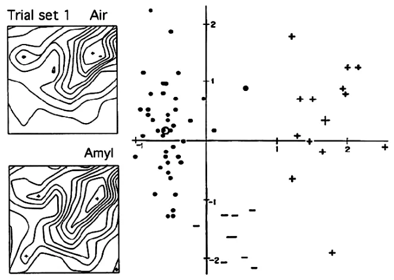
Hình 2 Trái: ví dụ về các đường đồng mức của biên độ bình phương trung bình căn của 64 phân đoạn ECoG từ mảng 8×8 (4×4 mm) trên hành khứu giác. Từ [32]. Phải: các cụm điểm được chiếu từ không gian 64 chiều bằng phân tích biệt thức cho thấy sự phân loại các mẫu hình theo khoảng cách Euclid của các điểm từ ba tâm trọng lực đối với đối chứng (không khí •), một chất tạo mùi được củng cố (amyl acetate +), và một chất tạo mùi không được củng cố (butyl alcohol -). Từ [53]
Tính ổn định trong hệ khứu giác và trong vỏ não mới đã được khám phá chi tiết dưới góc độ cảnh quan bộ hút hỗn loạn [42, 57], tính siêu ổn định dựa trên “động lực học phối hợp” [11, 40], tính lang thang hỗn loạn [59], và sự phá vỡ đối xứng tường minh so với tự phát giữa nhiều trạng thái cơ bản trong vật lý nhiều vật tiêu tán [33]. Trong quá trình hành vi bình thường, các trạng thái được thay đổi bởi các đầu vào điều biến thần kinh từ vùng dưới đồi và thân não gây ra các chuyển trạng thái như giữa các trạng thái ổn định của thức và ngủ. Ở trạng thái bất thường, trạng thái thức bị mất ổn định bởi sự kích thích cường độ cao dẫn đến cạn kiệt chất dẫn truyền thần kinh, khiến não chuyển sang một trạng thái thay thế được đặc trưng bởi một dạng động kinh [16]: các cơn động kinh cục bộ phức tạp bao gồm trạng thái vắng ý thức hành vi (mất ý thức kèm theo không thể chú ý, tri giác hoặc học tập). Một dạng mất ổn định bình thường quan trọng xảy ra trong quá trình học cách nhận diện một chất tạo mùi mới, đòi hỏi hoạt động của các nhân điều biến thần kinh trong thân não giải phóng các amin thần kinh và neuropeptide dưới sự kiểm soát của hệ viền.
Những đặc tính này cho thấy sự cần thiết phải phân biệt giữa ba loại thay đổi trong cả động lực học khứu giác và vỏ não mới. Thứ nhất, một kích thích sinh lý tác động lên các thụ thể gây ra một mẫu hình điện thế hoạt động, thông qua các trạm chuyển tiếp từ thụ thể, bơm một mẫu hình xung vào hành khứu giác đại diện cho kích thích đó. Phản ứng vỏ não bị dẫn dắt là một điện thế gợi. Bản thân đầu vào không ép buộc một sự chuyển trạng thái, mà nó làm nhiễu động động lực học và, khi kết thúc, cho phép hệ thống thư giãn trở về trạng thái tiền kích thích mà không làm thay đổi động lực học vỏ não. Thứ hai, việc học tập thiết lập một cảnh quan bộ hút trong vỏ não. Mỗi bộ hút được bao quanh bởi lưu vực hút của nó tương ứng với gradient khái quát hóa cho một phạm trù kích thích
[48]. Sự hình thành một lưu vực mới và bộ hút của nó là một sự rẽ nhánh cấu trúc không thể đảo ngược [41, 42]. Thứ ba, một hành vi tri giác được kích hoạt bởi biểu diễn của một kích thích khi các điện thế hoạt động liên quan chọn ra một bộ hút trong cảnh quan. Tri giác phụ thuộc vào một mẫu hình hoạt động không-thời gian được định hình bởi các trọng số synap đã được định hình qua quá trình học tập Hebb và phi Hebb trước đó [13]. Những synap đã biến đổi này lưu trữ các dạng kinh nghiệm đa dạng tạo thành các tập hợp tế bào thần kinh đan xen và chồng chéo nhau. Tại mỗi thời điểm chủ thể tương tác với môi trường, một sự lựa chọn phải được thực hiện trong các vùng vỏ não giác quan sơ cấp bằng cách mồi các tập hợp tế bào liên quan, tức là bằng cách tăng cường tính dễ kích thích và độ nhạy của chúng đối với đầu vào được dự đoán. Sự chuẩn bị cho việc lựa chọn đó được thực hiện bởi một quá trình gọi là “tiền hướng tâm” (preafference) [39], Chương của Bressler. Quá trình này được xác định cùng với sự hình thành một mẫu hình dao động đồng bộ toàn cục [20, 30, 31] được thiết lập thông qua sự trao đổi rộng rãi các điện thế hoạt động giữa các vùng vỏ não giác quan và hệ viền. Mẫu hình toàn cục này khơi gợi và điều biến cảnh quan bộ hút của tất cả các vùng vỏ não giác quan đồng thời, qua đó chuẩn bị cho chúng trước phạm vi các kết quả dự kiến sau mỗi hành động quan sát môi trường.
Trạng thái sẵn sàng toàn cục trong sự dự đoán này cấu thành một trạng thái siêu ổn định [Chương của Kelso]. Các kích thích giác quan đi vào chọn ra một lưu vực hút từ cảnh quan trong mỗi vùng vỏ não giác quan. Sự lựa chọn loại trừ lẫn nhau này có thể được gọi là sự phá vỡ đối xứng tự phát, phân biệt với sự phá vỡ đối xứng tường minh của điện thế gợi [33]. Sự chuyển tiếp từ hỗn loạn nhiều chiều sang động lực học ổn định hơn với việc lựa chọn một bộ hút ít chiều hơn có thể tương ứng với logic động [Chương của Perlovsky], vốn mô tả các chuyển tiếp từ các trạng thái tiềm năng mơ hồ và bất định chưa được hiện thực hóa sang một tri giác và nhận thức sắc nét, chắc chắn sau khi phát hiện một kích thích được dự đoán, như một cơ chế thiết yếu đi trước các chức năng nhận thức bậc cao hơn.
Sự chuyển trạng thái nội sinh trong quá trình hình thành một bó sóng có mẫu hình AM là bản chất của một hành vi tri giác. Việc truyền phát mẫu hình AM phải được tiếp nối bởi một sự chuyển trạng thái khác đưa vỏ não trở lại trạng thái tiếp nhận. Bằng chứng then chốt cho sự chuyển tiếp đầu tiên được cung cấp bởi các phép đo mẫu hình điều biến pha của các sóng mang beta hoặc gamma trong các đợt phát xung liên tiếp. Mỗi mẫu hình AM đi kèm với một mẫu hình không-thời gian của điều biến pha (PM). Pha được xác định tại tần số mang trội hoặc trung bình trong quá khứ ngay trước đó. Sự khởi phát của quá trình chuyển tiếp được đặc trưng bởi một sự gián đoạn biểu kiến trong pha giống như “trượt pha”, tiếp theo là sự xuất hiện của một tần số mang mới, trung bình khác biệt khoảng ±10–20 Hz. Mẫu hình không gian của pha có dạng một hình nón (Hình 3, trái) với đỉnh là độ sớm pha cực đại hoặc độ trễ pha cực đại. Hình nón được hiển thị bằng các vòng tròn đồng tâm biểu diễn các đường đồng pha. Hình nón xuất hiện vì một sự chuyển trạng thái trong một môi trường phân bố không xảy ra ở mọi nơi ngay lập tức. Giống như sự hình thành một bông tuyết hay giọt mưa, nó bắt đầu tại một điểm tạo mầm và lan tỏa theo hướng xuyên tâm. Gradient pha tính bằng rad/m chia cho tần số mang tính bằng rad/s cho ra vận tốc pha tính bằng m/s. Các vận tốc pha quan sát được phù hợp với vận tốc dẫn truyền của các điện thế hoạt động lan truyền trên các sợi trục chạy song song với bề mặt vỏ não. Vị trí đỉnh và dấu thay đổi ngẫu nhiên giữa các khung hình liên tiếp (Hình 3, phải). Sự lan truyền phụ thuộc vào sự tồn tại của một tỷ lệ nhỏ các sợi trục dài giữa các sợi trục ngắn chiếm ưu thế [42]. Dấu
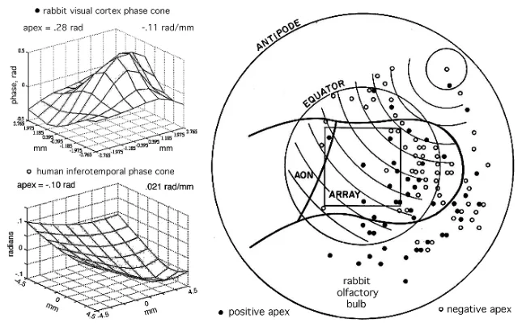
Hình 3 Trái: ví dụ về các nón pha từ ECoG vỏ não mới của người và thỏ. Từ [30]. Phải: đường viền hành khứu giác thỏ với mảng hình vuông chồng lên bề mặt cầu đã mở ra. Các cung tròn cho thấy một nón pha đại diện; các ký hiệu tối • chỉ vị trí của các đỉnh dương (“bùng nổ”); các ký hiệu sáng o chỉ các đỉnh âm (“co sụp”). Từ [24]
tại đỉnh phụ thuộc vào việc các sợi trục ngắn (sớm pha tại đỉnh, bùng nổ) hay các sợi trục dài (trễ pha tại đỉnh, co sụp) chiếm ưu thế trong quá trình truyền dẫn.
Những đặc tính này cho thấy sự chuyển trạng thái là một đặc tính nội sinh của các mạng lưới vỏ não phân bố. Nó không thể được quy cho một “máy tạo nhịp” cục bộ trong vỏ não, đồi thị, hay thể vân. Sau đó, có sự chuyển trạng thái thứ hai đưa vỏ não trở lại trạng thái tiếp nhận vốn là nội tại của hoạt động nền vỏ não. Không có sự gián đoạn pha biểu kiến nào. Thay vào đó, biên độ giải tích có thể suy giảm xuống mức thấp đến nỗi pha trở nên không xác định. Nếu trong điều kiện này có đầu vào mới đến vỏ não, khả năng xuất hiện một sự chuyển trạng thái mới sẽ nảy sinh. Sự lặp lại của việc đặt lại pha theo từng đợt tạo ra các chuỗi điện ảnh của các bó sóng được biểu hiện trong các khung hình AM và PM. Mỗi khung hình bắt đầu sau khi sự gián đoạn pha biểu hiện việc đặt lại pha. Khoảng thời gian trôi qua trước khi hình nón biến mất chứng minh thời lượng của khung hình.
Tiếp theo câu hỏi được đặt ra là, động lực học của hệ khứu giác có thể áp dụng cho các vùng giác quan khác ở mức độ nào? Các thành phần chính của hệ khứu giác là vỏ não cổ (allocortex). Đây là một mạng lưới sợi thần kinh ba lớp cổ xưa được tìm thấy ở tất cả các động vật có xương sống dưới nhiều hình thức khác nhau. Vỏ não mới sáu lớp, chỉ có ở động vật có vú, phức tạp hơn nhiều và có các hình thức cũng như mức độ chuyên biệt hóa rất đa dạng. Sự đơn giản tương đối của cấu trúc và động lực học vỏ não cổ làm cho nó trở thành một nền tảng tốt để nhận biết những đặc tính nào có thể mang tính nền tảng trong động lực học của vỏ não mới. Các vùng vỏ não giác quan thị giác, thính giác và cảm giác thân thể, tất cả đều là vỏ não mới, đều bộc lộ các phương thức vận hành cơ bản giống như trong khứu giác đối với tri giác: sự phát sinh hoạt động ECoG không tuần hoàn, phổ rộng với hoạt động xung tương quan thống kê; sự hình thành các bó sóng liên tiếp với các sóng mang kết hợp không gian; các mẫu hình AM có thể phân loại theo các kích thích và phản ứng có điều kiện đã học (CS và CR); và các mẫu hình PM đi kèm dưới dạng hình nón (Hình 3, trái) với vị trí và dấu của các đỉnh thay đổi ngẫu nhiên. Các mẫu hình AM và PM của vỏ não mới lớn hơn và phức tạp hơn các mẫu hình của vỏ não cổ, và chúng thiếu dấu mốc khung hình dễ dàng do hô hấp và đánh hơi cung cấp (các đợt phát xung gamma thấy trong Hình 1, A). Ngoài ra, các đặc tính được mô tả trong phần này và các phần sau đều đúng cho cả hai loại vỏ não. Quan trọng nhất trong số các đặc tính này là hoạt động nền phổ biến khắp nơi, vốn nắm giữ chìa khóa để hiểu chức năng vỏ não và do đó là chức năng nhận thức bậc cao hơn.
3 Tự tổ chức bằng phản hồi dương: Kích thích lẫn nhau và thiên lệch kích thích
Hoạt động tự phát lan tỏa của vỏ não dễ dàng được quan sát thấy cả ở các xung từ sợi trục và ở các điện thế trường từ dòng điện đuôi gai thấy trong ECoG (Hình 1). Nguồn gốc của hoạt động này đã được xác định là sự kích thích lẫn nhau giữa các tế bào kích thích [14, 22]. Trong vỏ não mới, 80% tế bào thần kinh là tế bào tháp, vốn có tính kích thích, và 90% synap của chúng đến từ các tế bào thần kinh nội vỏ não. 10% synap từ các nguồn bên ngoài vỏ não cũng có tính kích thích. Do đó, sự tương tác áp đảo giữa các tế bào thần kinh vỏ não mới là bằng sự kích thích lẫn nhau giữa các tế bào tháp. Trong hành khứu giác, tổ chức có khác biệt, bởi vì các tế bào tương đương với tế bào tháp (tế bào mitral và tế bào búi) bị áp đảo về số lượng với tỷ lệ >100:1 bởi các tế bào trung gian ức chế tương đương (các tế bào hạt bên trong). Một sự cân bằng động được duy trì bởi một quần thể lớn các tế bào trung gian kích thích (các tế bào quanh tiểu cầu ở lớp ngoài của hành khứu giác) [14]. Những tế bào thần kinh này truyền và nhận tín hiệu bằng GABA, nên chúng thường bị nhận diện nhầm là tế bào trung gian ức chế; tuy nhiên, hàm lượng ion clorua cao của chúng [56] khiến các synap GABA-A của chúng có tính kích thích. Hoạt động kích thích lẫn nhau duy trì của chúng không giống với các “mạch dội lại” của Hebb và Lashley dùng cho việc lưu trữ tạm thời giả định của ký ức [2] trong các tập hợp tế bào thần kinh nhỏ [49]. Thay vào đó, hoạt động nền của chúng ở trạng thái ổn định và quy mô lớn.
Cơ chế trong các quần thể tế bào quanh tiểu cầu và các quần thể kích thích khác đã được mô tả bằng một mạng lưới các phương trình vi phân thường (ODE) [14]. Tô-pô kết nối trong các quần thể thần kinh được biểu diễn (Hình 4) bằng các tập hợp K của các tế bào thần kinh cùng loại. Đơn giản nhất là các quần thể tế bào thần kinh không tương tác thuộc hai loại: KOe kích thích hoặc KOi ức chế, khi được kích hoạt đồng bộ sẽ hành xử như một tế bào thần kinh trung bình, nhưng với các biến trạng thái là mật độ sóng và mật độ xung thay cho dòng điện màng và chuỗi xung. Một quần thể KIe gồm các tế bào thần kinh kích thích tương tác như các tế bào quanh tiểu cầu có thể, bằng cách xem xét các điều kiện đối xứng, được rút gọn thành một vòng phản hồi dương, trong đó động lực học của các nhánh thuận và nhánh phản hồi KOe là giống hệt nhau, bởi vì mỗi tế bào thần kinh ở trạng thái tiếp nhận liên tục làm mới quần thể ở trạng thái truyền phát. Mỗi nhánh được mô tả bằng phép cộng tuyến tính có trọng số của mật độ sóng trong các đuôi gai và sự chuyển đổi phi tuyến tĩnh từ mật độ sóng sang mật độ xung. Hoạt động của đuôi gai có thể được mô tả bằng một ODE tuyến tính bậc 2 với các hằng số độ lợi cho các synap. Nghiệm của ODE đối với đầu vào xung phù hợp với điện thế sau synap (PSP) của đuôi gai
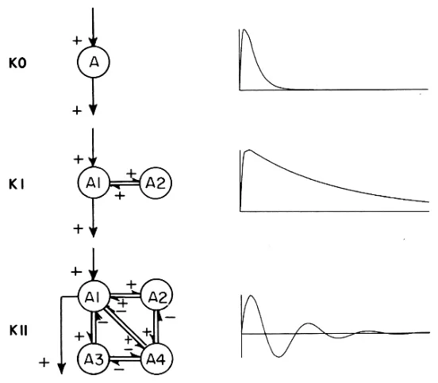
Hình 4 KO biểu diễn động lực học của một quần thể không tương tác; phản ứng với đầu vào xung (kích thích điện một cú sốc) tương ứng với điện thế đuôi gai sau synap của các tế bào thần kinh đơn lẻ. KI biểu diễn một quần thể tương tác cùng loại: KIe kích thích hoặc KIi ức chế với đáp ứng xung vòng kín đơn điệu kéo dài (điện thế gợi trung bình AEP và PSTH). KII biểu diễn sự tương tác giữa các quần thể tế bào thần kinh kích thích KIe và ức chế KIi với đáp ứng xung vòng kín dao động (AEP hoặc PSTH). Từ [14], Hình 1.6, tr. 40 của các tế bào thần kinh đơn lẻ đối với đầu vào xung một cú sốc: sự tăng theo hàm mũ nhanh chóng bị chi phối bởi độ trễ synap và các đặc tính cáp của đuôi gai, tiếp theo là sự suy giảm theo hàm mũ bị chi phối bởi điện trở và điện dung màng thụ động (Hình 4, KO). Trong một quần thể tế bào thần kinh, đầu ra của các sợi trục được quan sát trong biểu đồ thời gian sau kích thích (PSTH) của các tế bào thần kinh đơn lẻ đại diện, vốn có cùng dạng và hằng số tốc độ như PSP tổng của các đuôi gai.
Sự chuyển đổi từ mật độ sóng đuôi gai sang mật độ xung sợi trục tại các vùng kích hoạt bị chi phối bởi một hàm sigmoid bất đối xứng [14, 15] (Hình 5). Các ngưỡng phi tuyến của sợi trục xác định tiệm cận dưới. Các tế bào thần kinh không thể phát xung khi chúng bị ức chế dưới ngưỡng bởi đầu vào từ các tế bào trung gian ức chế. Tiệm cận trên được xác định bởi các thời kỳ trơ của sợi trục. Các tế bào thần kinh không thể phát xung với đầu vào kích thích khi chúng vừa mới phát xung gần đây.
Tuyến tính hóa từng khúc [14] động lực học vỏ não đạt được bằng cách thay thế hàm phi tuyến (Hình 5) bằng một giá trị độ lợi không đổi được cho bởi độ dốc của tiếp tuyến với đường cong sigmoid tại một điểm vận hành xác định cho đầu vào mật độ sóng và đầu ra mật độ xung. Điểm vận hành ở trạng thái ổn định nằm tại độ lợi đơn vị, khi biên độ đầu vào bằng biên độ đầu ra. Sự dịch chuyển khỏi điểm đặt trạng thái ổn định do đầu vào xung hoặc đầu vào duy trì có thể làm tăng hoặc giảm độ lợi khỏi mức đơn vị. Có hai điểm đặt ổn định tại độ lợi đơn vị: một điểm được tìm thấy trong tập hợp KIe tại mật độ sóng chuẩn hóa v > 0 (Hình 5, A). Điểm đặt kia được tìm thấy tại v = 0 trong tập hợp KII, được hình thành bởi sự tương tác giữa một tập hợp KIe và một tập hợp KIi. Tập hợp ức chế lẫn nhau
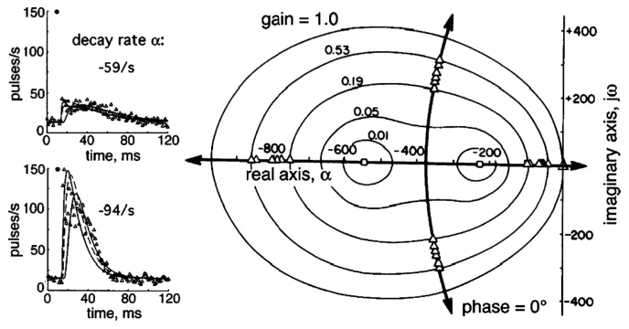
Hình 5 Sự chuyển đổi sóng sang xung tại các vùng kích hoạt trong các quần thể bị chi phối bởi một tính phi tuyến tĩnh, đó là đường cong sigmoid bất đối xứng được hiển thị với độ dốc cao trong trạng thái thức tỉnh (Hình 1, A) và độ dốc thấp trong trạng thái nghỉ ngơi (Hình 1, B). Các cặp đường cong tiệm cận về không cho thấy đạo hàm của đường cong sigmoid, vốn cho ra độ lợi phi tuyến. Xấp xỉ tuyến tính là bằng cách thay thế hàm số bằng tiếp tuyến tại điểm vận hành mong muốn, mà độ dốc của nó xấp xỉ độ lợi phản hồi cố định. A : tập hợp KIe, B: tập hợp KIIob. Các phương trình được cho trong [1, 14, 49]
KIi chỉ có một điểm đặt ổn định ở độ lợi bằng không tạo ra một ECoG phẳng, vì vậy một tập hợp KIi không thể hoạt động nếu thiếu một thiên lệch kích thích từ một hoặc nhiều tập hợp KIe. Tiệm cận cực đại, Qm, được xác định bởi các thời kỳ trơ; tuy nhiên, như được chỉ ra trong Hình 5, Qm thay đổi theo mức độ thức tỉnh dưới sự kiểm soát của hệ viền. Hai mức được hiển thị trong Hình 5. ECoG ở trạng thái thức tỉnh được thấy trong Hình 1, A. ECoG ở trạng thái nghỉ ngơi được thấy trong Hình 1, B.
Đáp ứng xung của hệ thống KIe vòng kín (Hình 1, KI) được cho bởi điện thế gợi một cú sốc trung bình (AEP) ở chế độ mật độ sóng (bản ghi ECoG) hoặc bởi biểu đồ thời gian sau kích thích (PSTH) ở chế độ mật độ xung (các giá trị trung bình khóa thời gian của bản ghi chuỗi xung từ các tế bào thần kinh đơn lẻ, Hình 6, trái, hoặc bản ghi đa đơn vị – không hiển thị). Tiện ích của đáp ứng xung nằm ở thông tin mà nó cung cấp về trạng thái của hệ thống và các đặc tính động lực học của nó, bởi vì nó chứa tất cả các tần số, và do đó nó bộc lộ các tần số đặc trưng của quần thể thần kinh trong trạng thái vận hành gần tuyến tính hiện tại của nó. Những đặc tính này được hiển thị trong một giản đồ không gian trạng thái (Hình 6, phải) được suy ra bằng cách tuyến tính hóa hai ODE phi tuyến bậc 2 ghép cặp mô hình hóa động lực học KIe trong vùng lân cận của điểm vận hành tiền kích thích (Hình 5, A). Việc lấy trung bình các đáp ứng xung (Hình 6, trái) từ sự kích thích lặp đi lặp lại tại các khoảng thời gian đều đặn là cần thiết để loại bỏ hoạt động nền vi mô được coi là nhiễu và trích xuất tín hiệu trung mô, vốn là quỹ đạo mà hệ thống quay trở lại trạng thái tiền kích thích sau mỗi xung.
Phân tích tuyến tính là công cụ mạnh mẽ nhất hiện có đối với các nhà động lực học thần kinh [6, 7, 12, 34, 44, 63]. Trong biến thể sử dụng phân tích quỹ đạo nghiệm, các tần số đặc trưng của hệ thống đã tuyến tính hóa được biểu diễn dưới dạng các cực vòng kín (các tam giác nhỏ trong Hình 6, phải), và các tần số “chống cộng hưởng” bị cấm đặc trưng được hiển thị dưới dạng các điểm không (các ký hiệu trong Hình 6, phải) trong các nghiệm của 2 ODE bậc 2 ghép cặp
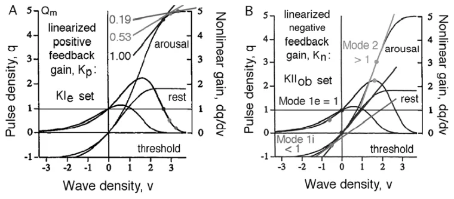
Hình 6 Trái: Các đáp ứng xung của một tế bào quanh tiểu cầu khi kích thích dây thần kinh khứu giác sơ cấp ở 6 cường độ. Dữ liệu trong các biểu đồ thời gian sau kích thích trung bình được khớp với các nghiệm của một ma trận gồm bốn ODE bậc 1. Phải: Các quỹ đạo nghiệm (các đường tối màu) của sự thay đổi ở các cực như một hàm của độ lợi (các đường đồng mức hình elip), kp. Ở độ lợi bằng không, các cực nằm ở các giá trị vòng hở (⊓), tốc độ tăng = -530/s, tốc độ suy giảm = -230/s. Các mũi tên trái-phải chỉ hướng thay đổi của các hằng số tốc độ thực khi các đường đồng mức độ lợi (elip) tăng lên vô cực. Các mũi tên lên-xuống chỉ hướng tiến gần của các nghiệm liên hợp phức tới các điểm không ở nửa phải của mặt phẳng phức (không hiển thị). Từ [14], Hình 5.10 tr. 289, Hình 5.13 tr. 292
biểu diễn động lực học vòng kín. Các cực vòng hở trong ODE phản hồi trở thành các điểm không trong hàm truyền bậc 4 đã tuyến tính hóa, tín hiệu nhỏ, vòng kín (các ký hiệu ở nửa trái của trục thực âm trong Hình 6, phải).
Một tham số kiểm soát thực nghiệm rất hữu ích là cường độ của xung (tích của biên độ và thời lượng). Việc thay đổi cường độ kích thích làm cho các tần số đặc trưng trong phản ứng thay đổi. Những thay đổi về tần số được chuyển dịch về mặt đồ họa thành các tham số sinh lý hữu ích nhất, đó là cường độ tương tác (độ lợi) giữa các quần thể tế bào thần kinh. Các tần số (nghiệm) thay đổi dọc theo các đường đậm (quỹ đạo nghiệm), và các độ lợi được tính toán như các giá trị cho độ lợi vòng kín đã tuyến tính hóa (các giao điểm của quỹ đạo nghiệm với các đường đồng mức trong Hình 6, phải). Khi cường độ được tăng lên hoặc hạ xuống, các tần số đặc trưng của các thành phần vòng hở của hệ thống (các synap và cường độ của chúng) không thay đổi, nhưng các đặc tính chức năng của hệ thống bị biến đổi bởi tính phi tuyến phụ thuộc biên độ tại các vùng kích hoạt được mô tả bằng đường cong sigmoid bất đối xứng (Hình 5, A). Việc thay đổi biên độ phản ứng bằng cách thay đổi cường độ đầu vào làm thay đổi các tần số đặc trưng của các cực và điểm không vòng kín bằng cách thay đổi các điểm đặt nơi độ dốc tiếp tuyến được tính toán. Với sự thay đổi từng bước có hệ thống về cường độ kích thích, các giá trị đã thay đổi của các cực vòng kín khắc họa nên các quỹ đạo nghiệm (vuông góc với các đường đồng mức độ lợi).
Các quỹ đạo nghiệm này (tại pha không radian trong phản hồi dương và tại pha π radian trong phản hồi âm) định lượng mức độ ổn định của hệ thống và xác định cách một sự thay đổi ở đầu vào có thể mang lại sự ổn định lớn hơn với khả năng kháng lại sự chuyển trạng thái (các cực di chuyển sang trái ra xa trục ảo), hoặc làm giảm tính ổn định và tăng khả năng chuyển sang một trạng thái mới (các cực di chuyển sang phải về phía trục ảo). Giả thuyết cần xem xét là sự hình thành một mẫu hình AM trong một hành vi tri giác có thể diễn ra khi các cực dịch chuyển sang bên phải của trục ảo, tạo ra các số hạng hàm mũ với tốc độ tăng dương.
Các đầu mũi tên trên các quỹ đạo nghiệm trong Hình 6 chỉ hướng mà độ lợi tăng lên khi biên độ phản ứng giảm đi. Một mặt, xung mạnh thúc đẩy sự gia tăng cường độ xung sẽ làm tăng biên độ phản ứng và giảm độ lợi phản hồi, điều này làm tăng tốc độ suy giảm trở về mức nền tiền kích thích. Sự suy giảm độ lợi phản hồi KIe khi tăng cường độ đầu vào là do các thời kỳ trơ; các tế bào thần kinh bị thử thách phát xung không thể làm điều đó nếu chúng vừa mới phát xung gần đây. Mặt khác, phép ngoại suy tốc độ suy giảm của PSTH về đầu vào bằng không (ngưỡng phản ứng) cho ra tốc độ suy giảm bằng không. Một phản ứng như vậy sẽ là một hàm bậc thang [14]; nó không thể quan sát được, vì nó có biên độ bằng không. Phép ngoại suy tốc độ suy giảm về không và độ lợi phản hồi về đơn vị tại ngưỡng bằng cách sử dụng quỹ đạo nghiệm này chứng minh rằng quần thể tự ổn định ở đầu ra kích thích trạng thái ổn định của nó nhờ các thời kỳ trơ mà không cần đến sự ức chế. Cực tại gốc của mặt phẳng phức (Hình 6, phải) phù hợp với một trị riêng bằng không (tốc độ thay đổi bằng không, một hằng số thời gian vô hạn).
Cực đó biểu diễn trạng thái ổn định chức năng của quần thể KIe vốn sẽ giữ nguyên khi không có đầu vào: đầu ra mật độ xung kích thích ở trạng thái ổn định, tức hoạt động nền. Trạng thái này ổn định, bởi vì đầu vào kích thích làm tăng đầu ra nhưng lại làm giảm độ lợi, nên hoạt động của quần thể có xu hướng tiến về mức trạng thái ổn định. Đầu vào kích thích giảm hoặc đầu vào ức chế tăng sẽ làm điều ngược lại. Do đó, cực này biểu diễn một bộ hút điểm, khác với trạng thái hoạt động bằng không dưới gây mê sâu hoặc khi chết, ở chỗ sự kích thích lẫn nhau cung cấp thiên lệch kích thích duy trì, ổn định, ở trạng thái ổn định bên trong chính nó và cho các quần thể thần kinh khác trong hệ khứu giác. Bộ hút điểm khác không chi phối động lực học của quần thể KIe và điều biến tất cả các quần thể khác nhận thiên lệch kích thích đó.
Việc quan sát thực nghiệm trực tiếp cực tại gốc tọa độ rõ ràng là không thể, bởi vì đáp ứng xung có biên độ bằng không và tốc độ suy giảm bằng không. Hơn nữa, mọi quần thể KIe đều có đầu vào liên tục từ các quần thể khác, bao gồm quần thể quanh tiểu cầu nhận cả đầu vào giác quan và đầu vào ly tâm từ các phần khác của não trước, vì vậy trạng thái ổn định quan sát được cho một cực bị dịch chuyển sang phía âm của tần số không trên trục thực của mặt phẳng phức (độ lợi = 0,53).
Phương pháp quỹ đạo nghiệm đòi hỏi tuyến tính hóa từng khúc của động lực học. Kỹ thuật này phụ thuộc vào thực tế là đầu vào xung không làm thay đổi cấu trúc hệ thống. Thay vào đó, đầu vào áp đặt một số hạng phụ thêm, một nhiễu động chồng lên hoạt động nền làm bộc lộ động lực học thông qua quỹ đạo thư giãn trở về trạng thái tiền kích thích: sự phá vỡ đối xứng tường minh, trái ngược với sự phá vỡ đối xứng tự phát [33] mà, như sẽ được chỉ ra, đặc trưng cho tri giác. Cùng một cặp ODE bậc 2 có thể áp dụng trên toàn bộ phạm vi tuyến tính hóa từng khúc nhưng với một giá trị khác nhau của tham số độ lợi cho mỗi mức đầu vào. Tổng quát hơn, các quần thể tế bào thần kinh chia sẻ các đặc tính về ngưỡng, thời kỳ trơ và kích thích lẫn nhau có thể được mô tả là bị chi phối bởi một bộ hút điểm khác không, vốn mô tả quá trình mà các quần thể kích thích duy trì hoạt động nền ở trạng thái ổn định khác không mà không cần sự ức chế để ngăn chặn sự phóng điện kích thích mất kiểm soát. Nhờ đó, sự kích thích lẫn nhau cung cấp thiên lệch kích thích trong vỏ não vốn thiết yếu để duy trì hoạt động nền “tự phát”. Hoạt động này trong nhiều hoàn cảnh đã được chứng minh là có biểu đồ biên độ gần với nhiễu Gauss và mật độ phổ công suất tuân theo quy luật lũy thừa với độ dốc gần −2 (1/f2, “nhiễu nâu” [55]).
4 Đo lường và mô hình hóa các dao động sử dụng quỹ đạo nghiệm trong tuyến tính hóa từng khúc
Việc đưa vào các tế bào thần kinh ức chế (Hình 4, KII) là cần thiết không phải để ổn định các mạng lưới thần kinh mà là để tạo ra các dao động, đáng chú ý nhất trong hệ khứu giác là các dao động ở dải tần gamma, 30–80 Hz (Hình 1, A và Hình 4 KII, Hình 7, trái). Việc xác định một tần số trung tâm trong dải này, 40 Hz, hiện ra ngay lập tức từ việc đo các hằng số thời gian vòng hở (Hình 4 KO) của PSP hoặc PSTH, tức các đáp ứng xung của các tế bào thần kinh kích thích và ức chế không tương tác cấu thành nên các quần thể khứu giác. Thời gian tăng theo hàm mũ trung bình gần 1,25 ms; thời gian suy giảm theo hàm mũ gần 5 ms. Một chu kỳ dao động đòi hỏi hai lượt đi quanh vòng lặp, cho tổng độ trễ là 25 ms (thời lượng sóng
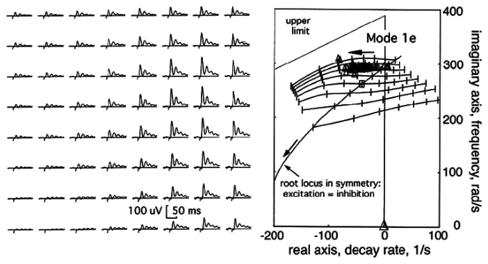
Hình 7 Trái: Một tập hợp gồm 64 đáp ứng xung thu được đồng thời từ một mảng điện cực 8×8 kích thước 4×4 mm để ghi ECoG (các khung vuông trong Hình 3 trái và hình lồng vuông mở trong Hình 2, phải) cho các biên độ khác nhau tại các vị trí khác nhau khi kích thích một cú sốc dây thần kinh khứu giác. Sự dịch chuyển lên trên của đường cơ sở được cung cấp bởi các tế bào thần kinh quanh tiểu cầu KIe với độ lợi dương kp (được hiển thị bởi PSTH trong Hình 6, trái). Tất cả các dao động đều có cùng tần số, với tốc độ suy giảm tỷ lệ thuận với biên độ. Từ [14], Hình 4.27 tr. 221. Phải: các cực được cho bởi các tần số và tốc độ suy giảm của sóng cosin tắt dần trội được khớp với mỗi trong số 64 đáp ứng xung đã cho ra quỹ đạo nghiệm Chế độ 1e đối với tập hợp KII với việc duy trì độ lợi đơn vị (Hình 5, B). Các mũi tên hướng sang trái chỉ tốc độ suy giảm tăng lên của dao động gamma gợi tại các vị trí có biên độ phản ứng tăng do sự giảm độ lợi bởi các thời kỳ trơ. Từ [14], Hình 6.86 tr. 361 của tần số 40 Hz). Tuy nhiên, các tế bào thần kinh kích thích kích thích lẫn nhau, và các tế bào thần kinh ức chế ức chế lẫn nhau, cũng như tương tác trong phản hồi âm (Hình 1, KII). Hai loại phản hồi dương này — kích thích lẫn nhau trong quần thể KIe và ức chế lẫn nhau trong quần thể KIi — điều biến tần số của phản hồi âm trên dải gamma bằng sự biến thiên của 4 loại độ lợi thuận: các synap kích thích hoặc ức chế trên các tế bào thần kinh kích thích hoặc ức chế. Nếu bốn độ lợi được đặt bằng nhau và thay đổi đồng thời, tính đối xứng của sự kích thích lẫn nhau và ức chế lẫn nhau dẫn đến sự triệt tiêu cực-không. Quỹ đạo nghiệm (pha = π radian trong phản hồi âm) được hiển thị cho nửa trên của mặt phẳng phức dưới dạng cung tròn (“đối xứng” trong Hình 7, phải) dâng lên khi độ lợi phản hồi âm tăng từ cực vòng hở (được hiển thị trên Hình 6 tại a = –230/s) trên trục thực âm và cắt trục ảo gần 300 rad/s (50 Hz). Hình chữ nhật nhỏ ở giữa xác định trạng thái trung bình hoặc điểm nghỉ được quan sát đối với các đáp ứng xung tại đầu vào xung gần ngưỡng bằng kích thích một cú sốc dây thần kinh khứu giác sơ cấp [14]. Đường dẫn đầu vào này vào hành khứu giác được gọi là “thuận chiều” (orthodromic) vì hướng truyền dẫn phù hợp với đầu vào bình thường của các điện thế hoạt động vào hành khứu giác từ các thụ thể giác quan trong mũi. Ngược lại, sự kích thích điện vào đường đầu ra của hành khứu giác, dải khứu giác bên được tạo thành bởi các sợi trục của tế bào mitral, được gọi là “ngược chiều” (antidromic), vì các điện thế hoạt động gợi đi vào hành khứu giác một cách bất thường, tức là ngược hướng với sự lan truyền bình thường (Hình 8).
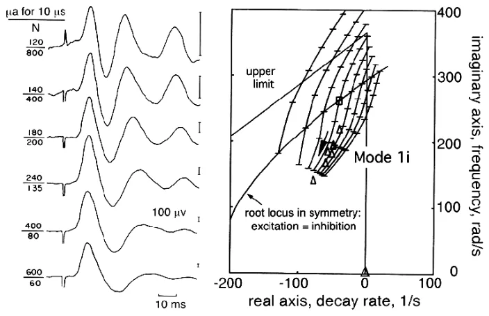
Hình 8 Trái: các cú sốc đơn ngược chiều vào dải khứu giác bên đã gợi ra các đáp ứng xung trong hành khứu giác, bỏ qua các tế bào thần kinh quanh tiểu cầu và thiên lệch kích thích mà chúng đóng góp cho đầu vào. Khi cường độ kích thích tăng lên, tần số giảm đi với rất ít thay đổi về tốc độ suy giảm, tạo ra một quỹ đạo nghiệm thẳng đứng. Phải: các quỹ đạo nghiệm từ việc giải ODE cho các đáp ứng xung dự đoán tần số và tốc độ suy giảm. Cùng các quỹ đạo nghiệm Chế độ 1i này được suy ra từ các đáp ứng xung thu được với cường độ xung cố định trong khi làm giảm hoạt động nền bằng cách gây mê barbiturat. Nghĩa là, tần số dao động được xác định bởi tỷ lệ giữa hoạt động gợi và hoạt động nền, khi điện thế gợi vượt quá hoạt động nền. Từ [14], Hình 6.11, tr. 374
Chế độ 1e cho thấy sự ổn định tăng lên được áp đặt bởi cơ chế hành khứu giác để đáp ứng với đầu vào không liên quan hoặc nhiễu. Đường phía trên cho thấy giới hạn được áp đặt bởi giá trị của độ lợi phản hồi trong quần thể KIe tạo ra một cực tại gốc của mặt phẳng phức đối với độ lợi phản hồi dương đơn vị, kp = 1. Nghĩa là, khi đầu vào dồn dập vào vỏ não dịu đi, vỏ não có thể lắng xuống hướng tới biên độ trạng thái ổn định bên trong của hoạt động nền bị chi phối bởi bộ hút khác không được biểu diễn bởi cực tại gốc của mặt phẳng phức. Khi đó cực dao động có xu hướng tiến tới tần số cao hơn và đường bao suy giảm nhanh hơn của đáp ứng xung, nhưng chỉ đến giới hạn của đường chéo được hiển thị là “giới hạn trên” ở trạng thái ổn định. Cũng như với cực tại gốc tọa độ, các đáp ứng xung dao động tại giới hạn là không thể quan sát được.
Các đáp ứng xung của hệ khứu giác (các điện thế gợi trung bình AEP) mà biên độ đỉnh của chúng không vượt quá phạm vi biên độ của ECoG nền đang diễn ra tuân theo tính cộng và tính tỷ lệ khi thử nghiệm cú sốc kép, cho thấy có một phạm vi gần tuyến tính tín hiệu nhỏ trong động lực học của các thành phần chính thuộc hệ khứu giác trung ương. Mũi tên hướng xuống sang trái trong Hình 7 cho thấy sự giảm tần số và tăng tốc độ suy giảm khi tất cả các độ lợi phản hồi đều giảm như nhau (“đối xứng”) do tăng cường độ đầu vào hoặc do giảm thiên lệch nền từ các tập hợp KIe.
Quỹ đạo nghiệm đối xứng dưới điều kiện bằng nhau của phản hồi dương kích thích và ức chế này hiếm khi được thấy trong các quỹ đạo nghiệm thực nghiệm suy ra từ các điện thế gợi, bởi vì sự kích thích lẫn nhau (KIe) và ức chế lẫn nhau (KIi) hiếm khi bằng nhau. Khi sự kích thích lẫn nhau chiếm ưu thế, quỹ đạo nghiệm nằm ngang (Chế độ 1e). Sự kích thích dải đầu vào tới hành khứu giác gợi ra các điện thế trong đó tốc độ suy giảm tỷ lệ thuận với biên độ phản ứng trên phân bố không gian của đầu vào nhưng tần số không đổi (các quỹ đạo nghiệm nằm ngang trong Hình 7, phải). Khi sự ức chế lẫn nhau chiếm ưu thế, quỹ đạo nghiệm có thể tiệm cận phương thẳng đứng (Chế độ 1i, Hình 8, phải). Sự kích thích ngược chiều vào dải đầu ra của hành khứu giác, dải khứu giác bên, kích hoạt trực tiếp các tế bào trung gian ức chế bằng các synap đuôi gai-đuôi gai, tạo ra một thiên lệch ức chế mạnh cho các dao động (Hình 8, Chế độ 1i) mà không được bù đắp bởi đầu vào KIe như ở đầu vào thuận chiều (Hình 7, trái), bởi vì các tế bào quanh tiểu cầu không được kích hoạt bởi sự kích thích ngược chiều.
Các quỹ đạo nghiệm Chế độ 1e và 1i chỉ được thấy khi biên độ của các điện thế gợi một cú sốc vượt quá phạm vi biên độ ECoG nền. Điều này là do các ngưỡng của sợi trục trong quá trình ức chế hồi quy giới hạn biên độ của hoạt động gợi vượt quá phạm vi tự phát. Khi các tế bào thần kinh bị ức chế dưới ngưỡng của chúng, chúng không thể phát xung để báo hiệu độ lớn của đầu vào ức chế. Các ngưỡng chặn đầu ra sợi trục vốn báo hiệu sự ức chế đuôi gai quá mức; sự chặn này làm giảm hiệu quả độ lợi phản hồi trong vòng lặp KII [14], Hình 5.28, tr. 335. Ngược lại, các thời kỳ trơ (chứ không phải các ngưỡng) của sợi trục giới hạn phạm vi trên của hoạt động nền và các điện thế gợi chồng lên (Hình 5, kn > 1).
Khi cường độ đầu vào được cố định để tạo ra các điện thế gợi mà biên độ đỉnh-đến-đỉnh của chúng không vượt quá phạm vi hoạt động nền, tần số và tốc độ suy giảm của các điện thế gợi trung bình liên tiếp đều cao khi biên độ thấp và thấp khi biên độ cao (mũi tên xuống-phải, Hình 9). Những biến thiên này cung cấp bằng chứng cho các thăng giáng tự phát trong độ lợi phản hồi và điểm đặt,
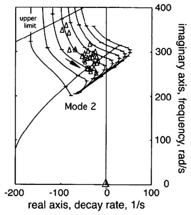
Hình 9 Các quỹ đạo nghiệm vòng kín ở nửa trên của mặt phẳng phức tại π radian được bộc lộ qua sự biến thiên tự phát của các đáp ứng xung dao động trong phạm vi tín hiệu nhỏ, gần tuyến tính. Các tam giác nhỏ chỉ các tần số đặc trưng của các điện thế gợi được khớp bằng các hàm cosin tắt dần. Mũi tên chỉ hướng giảm tốc độ suy giảm và tần số khi biên độ phản ứng tăng lên (hướng ngược lại so với Chế độ 1e trong Hình 7, phải). Từ [14], Hình 6.21, tr. 374 do các thăng giáng tự phát ở các mức độ của hoạt động nền. Những mối quan hệ này khác biệt rõ rệt với các mối quan hệ của Chế độ 1e và Chế độ 1i. Các quỹ đạo nghiệm Chế độ 2 từ việc giải ODE để khớp dữ liệu cắt qua trục ảo khi biên độ tăng lên, điều này ngụ ý sự kích thích mất kiểm soát do phản hồi dương giữa biên độ và độ lợi. Tuy nhiên, các quỹ đạo nghiệm quay ngược lại về phía trục ảo và hội tụ về một giao điểm gần 250 radian/s (40 Hz). Sự hội tụ về một cặp cực liên hợp phức trên trục ảo dự đoán sự tồn tại của một bộ hút chu trình giới hạn cho tập hợp KII ở giữa dải gamma. Trạng thái này được dự đoán là ổn định, bởi vì sự gia tăng thêm về biên độ bị ngăn chặn bởi độ lợi phản hồi giảm. Trong phân tích tuyến tính từng khúc các quan sát dựa trên trung bình thời gian làm phẳng hoạt động nền (AEP và PSTH), kết quả này dự đoán tính lưỡng ổn định: sự hội tụ của vỏ não về một bộ hút điểm hoặc một bộ hút chu trình giới hạn.
5 Định nghĩa một tham số trật tự vỏ não liên quan đến hàm lượng thông tin của hoạt động vỏ não
Tần số mang ở mọi nơi là giống nhau trên khắp hành khứu giác và tương tự trên khắp mỗi vùng vỏ não mới giác quan, nhưng nó có xu hướng thay đổi theo thời gian. Do sự điều biến tần số (FM) này, việc nghiên cứu các mẫu hình không gian được thực hiện tối ưu bằng cách sử dụng tần số tức thời suy ra từ biến đổi Hilbert [20, 21, 39], vốn mang lại độ phân giải thời gian của các mẫu hình AM và PM tốt hơn so với phép phân tách sử dụng biến đổi Fourier [20, 21]. Các giá trị số hóa của 64 kênh ECoG từ mảng 8×8 tạo ra mẫu hình PM hình nón của điều biến pha (PM) tại tần số tức thời (Hình 3, trái), trong đó các đường đồng pha tạo thành các vòng tròn cách đều nhau quanh một đỉnh (Hình 3, phải). Hiện tượng này cũng được tìm thấy ở tất cả các vùng của vỏ não mới giác quan, điều này ngụ ý rằng sự giao tiếp bên trong vỏ não diễn ra với một vận tốc hữu hạn trên bề mặt của nó, bị áp đặt bởi sự cần thiết của các điện thế hoạt động tác động tại các synap nhằm cung cấp sự khóa pha của các dao động tại tần số mang biến thiên theo thời gian. Bất kỳ hình thức lấy trung bình thời gian nào trên nhiều phép đo độ lệch pha giữa hai điểm đều phải hội tụ về độ trễ pha bằng không [28] bất kể khoảng cách giữa hai điểm lớn đến đâu.
Biên độ giải tích, A j(t), tại điện cực thứ j trong số 64 điện cực của mảng đồng biến thiên mạnh theo thời gian. Sự biến thiên được phản ánh trong giá trị trung bình không gian, A(t) (đường cong đỏ/xám trong Hình 10, A). Khi A(t) tiến gần về không, pha trở nên không xác định. Tại mỗi vị trí không gian, tốc độ tăng pha (tần số tức thời) chuyển sang một giá trị mới được chia sẻ bởi các sóng ở tất cả các vị trí khác, độc lập với biên độ phản ứng. Dao động kết hợp không gian tái đồng bộ hóa gần một tần số trung bình mới, thường khác ± 10–20 Hz so với tần số trung bình ở khung hình trước. Trong quá trình chuyển tiếp, độ lệch chuẩn không gian của các hiệu pha, SDX(t), thăng giáng quanh các giá trị cao (đường cong xanh dương/xám trong Hình 10, A). Có hai lý do. Một lý do là ở các biên độ giải tích rất thấp, sai số đo lường pha rất lớn khi pha không xác định. Lý do kia là sự chuyển tiếp không diễn ra đồng thời mà phân tán theo nón pha nhưng trong phạm vi ± π/4 (± 45°), giá trị nửa công suất. Do đó, các đỉnh SDX(t) cung cấp một dấu mốc trong ECoG để định vị các bước nhảy đồng bộ hóa rộng rãi biểu thị các sự chuyển trạng thái phân bố trong vỏ não.
Mẫu hình tương quan nghịch giữa SDX(t) và A(t) này xảy ra cả ở những đối tượng thức tỉnh đang tích cực tham gia tri giác [5, 18, 20, 21, 29, 48] và ở những đối tượng đang nghỉ ngơi (Hình 10, A). Mẫu hình này được mô phỏng một cách đơn giản [22]. Hàm truyền trong vòng phản hồi dương mô hình hóa động lực học của tập hợp KIe có thể được xấp xỉ bằng một số hạng hàm mũ siêu việt có cùng dạng với một quá trình khuếch tán 1-D. Hàm tự tương quan, tương quan chéo và biểu đồ khoảng thời gian phù hợp với các đặc trưng của một quá trình Poisson có thời kỳ trơ. Các chuỗi xung của các tế bào thần kinh thành phần có thể được mô hình hóa bằng các số ngẫu nhiên. Tổng của một số lượng lớn
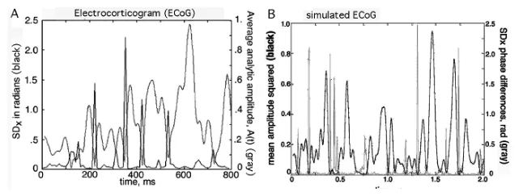
Hình 10 (A) đây là một ví dụ về ECoG từ một đối tượng người đang nghỉ ngơi, cho thấy hoạt động nền. Khi độ lệch chuẩn không gian của các hiệu pha, SDX(t), giảm xuống một giá trị thấp, biên độ giải tích trung bình, A(t), tăng lên cực đại trong khoảng thời gian có tần số tương đối không đổi tiếp theo sau một sự chuyển trạng thái [21]. (B) mẫu hình này được mô phỏng bằng cách cho nhiễu nâu 1/f 2 đi qua một bộ lọc thông dải ở dải gamma. Biên độ giải tích trung bình và phương sai không gian của pha giải tích đồng biến thiên nghịch đảo [22]
các số ngẫu nhiên phân bố độc lập và đồng nhất hội tụ về một phổ mật độ công suất với độ dốc 1/f2 trong tọa độ log-log [55]. Khi nhiễu nâu này được đưa qua một bộ lọc thông dải ở dải gamma, biên độ và pha biến thiên theo cách thức được trình bày trong Hình 10, B. Vỏ não cung cấp dải thông tại tần số đặc trưng của mối quan hệ phản hồi âm giữa các tế bào tháp (hoặc tế bào mitral) và các tế bào trung gian ức chế (hoặc tế bào hạt bên trong) (Hình 7, phải). Kết quả được thấy trong các thăng giáng của hoạt động dải gamma trong ECoG; biểu đồ biên độ gần với phân bố Gauss; đường bao của hoạt động tuân theo phân bố Rayleigh [14], tr. 148, Hình 3.13c; và mật độ phổ công suất trong tọa độ log-log có độ dốc gần –2. Các gai nhọn trong SDX(t) tái diễn thất thường ở dải theta, như được bộc lộ qua sự tương quan giữa ECoG và SDX(t) trong cả ECoG thực [20, 21, 26] và mô phỏng [22]. Do đó, các gai nhọn trong SDX(t) ở Hình 10, A có thể được xem là nội tại của động lực học vỏ não. Nhiễu nâu được tạo ra bởi động lực học KIe (Hình 4 và 6); các gai rỗng (null spike) xuất hiện khi nhiễu đi qua bộ lọc thông dải KII (Hình 4 và 7). Các gai rỗng không bị áp đặt bởi đầu vào giác quan; thay vào đó, chúng bộc lộ sự im lặng nội tại từng đợt của hoạt động nền. Sự im lặng thoáng qua đó có thể tạo điều kiện cho tri giác vì lý do sau đây. Vỏ não chỉ trải qua một sự chuyển trạng thái khi có sự hiện diện của đầu vào giác quan trên ngưỡng. Ngưỡng được giảm đi đáng kể đối với các kích thích mà một tập hợp Hebb đã tồn tại sẵn cùng với bộ hút và lưu vực hút đi kèm của nó. Ngưỡng có thể còn được giảm thêm nữa nhờ sự suy giảm ngắn ngủi trong nhiễu nền vỏ não.
Biên độ giải tích, A j(t), cũng thay đổi theo vị trí ghi không gian, tạo ra mẫu hình AM không gian được biểu diễn bằng một vectơ 64×1, A(t). Vectơ này được chuẩn hóa bằng cách chia mỗi giá trị A j (t) cho biên độ trung bình, A(t). Trong khi mẫu hình AM ở mọi bước số hóa đều đi kèm với một mẫu hình PM, chỉ những mẫu hình kéo dài từ 3 đến 5 chu kỳ của tần số trung bình duy trì và nón pha của nó mới dễ dàng được nhận diện, đo lường và phân loại theo các phạm trù kích thích. Các mẫu hình AM có độ phân loại đạt ý nghĩa thống kê cao nhất là những mẫu hình ở đỉnh của A(t), khi tốc độ tăng của pha giải tích (tần số tức thời) gần như không đổi và phương sai không gian của pha, SDX(t), thấp. Đây là những mẫu hình AM có thể phân loại được theo các CS được đưa cho các đối tượng đang được ghi ECoG (Hình 2, phải).
Vectơ chuẩn hóa, A(t), biểu diễn các mẫu hình AM được chọn làm tham số trật tự cho vỏ não, bởi vì nó đo lường loại hình và mức độ cấu trúc trong hoạt động vỏ não. Tuy nhiên, đối với các mục đích mô tả, cần một chỉ số vô hướng để thể hiện các mối quan hệ của tham số trật tự với các biến số khác, đặc biệt là với biên độ ECoG. Chỉ số này được suy ra như sau. A(t) đã chuẩn hóa xác định một điểm trong không gian 64 chiều đại diện cho mẫu hình AM. Các mẫu hình tương tự tạo thành một cụm điểm biểu hiện một bộ hút trong không gian trạng thái vỏ não. Nhiều cụm bộc lộ một cảnh quan bộ hút. Sự thay đổi từ lưu vực hút này sang lưu vực hút khác qua một ranh giới (đường phân cách) được thể hiện bằng một quỹ đạo của các điểm số hóa liên tiếp cho A(t), khi trạng thái vỏ não dịch chuyển từ cụm này sang cụm khác. Tốc độ thay đổi tuyệt đối của tham số trật tự, De(t) = |A(t) – A(t-1)|, được cho bởi khoảng cách Euclid giữa các điểm liên tiếp. De(t) tương ứng với giá trị tuyệt đối của đạo hàm số của tham số trật tự. Nó có giá trị cao trong quá trình chuyển trạng thái và giảm
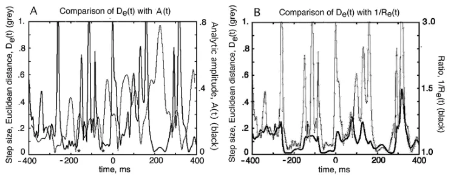
Hình 11 (A): Tốc độ thay đổi của tham số trật tự, De(t), giảm xuống một giá trị thấp từ rất lâu trước một sự gia tăng lớn của biên độ giải tích trung bình, A(t). (B): chỉ số đồng bộ, Re(t), (được hiển thị ở đây dưới dạng nghịch đảo của nó, 1/Re(t)) tăng lên gần mức đơn vị trước khi các mẫu hình AM ổn định (De(t) thấp) và từ rất lâu trước khi A(t) tăng, cho thấy sự gia tăng tính đồng bộ không phải là cơ sở cho sự gia tăng biên độ giải tích trong các khung hình của ECoG. Từ [20]
xuống các giá trị thấp khi một mẫu hình AM mới xuất hiện cùng với sự hội tụ về một bộ hút, tiếp theo là một sự gia tăng lớn trong A(t) (Hình 11, A). Do đó, De(t) biến thiên nghịch đảo với mức độ ổn định của mẫu hình được xác định bởi tham số trật tự dạng vectơ [20]. Mức độ trật tự cũng biến thiên tỷ lệ thuận với tốc độ tiêu tán năng lượng tự do trong hoạt động vỏ não, vốn được biểu hiện ở bình phương biên độ giải tích ECoG trung bình, A2(t). Chỉ số tốt nhất hiện có để định vị theo thời gian các mẫu hình AM có thể phân loại trong ECoG [18] là tỷ số, He(t) = A2(t) / De(t). Atmanspacher và Scheingraber [3] định nghĩa đại lượng này là thông tin thực dụng được mang bởi bó sóng ở dải beta hoặc gamma. Nó là tỷ số giữa tốc độ tiêu tán năng lượng tự do và tốc độ tăng của tham số trật tự. He(t) cũng cung cấp một giá trị vô hướng duy nhất để đánh chỉ số cho mỗi mẫu hình AM có thể phân loại như một trạng thái cơ bản không tương đương [33].
Sự mất đồng bộ thường gắn liền với hoạt động nhanh điện thế thấp, trong khi sự đồng bộ hóa gắn liền với hoạt động chậm điện thế cao. Một sự gia tăng trong biên độ giải tích ECoG trung bình có thể xảy ra khi có nhiều sự đồng bộ hơn, nhiều tổng dòng điện đuôi gai hơn, hoặc cả hai. Hai yếu tố này được phân biệt trong các bản ghi ECoG beta-gamma được ghi bằng mảng 8×8 mật độ cao bằng cách tính độ lệch chuẩn thời gian, SDT(t), của dạng sóng trung bình trong một cửa sổ trượt có thời lượng gấp đôi bước sóng của tần số trung tâm của dải thông và chia nó cho giá trị trung bình của 64 SDT(t). Khi không có sự đồng bộ, tỷ số, Re(t) = SDT(t) / SDT(x), tiến gần tới 1/n^0.5, trong đó n là số bước thời gian trong cửa sổ. Re(t) bằng đơn vị khi có sự đồng bộ hoàn toàn (tần số tức thời và pha giống hệt nhau), bất kể có các mẫu hình AM hay không. Re(t) được sử dụng để chứng minh rằng những gia tăng lớn trong A(t) trong quá trình hình thành mẫu hình AM không phải do sự gia tăng mức độ đồng bộ (Hình 11, B), vốn xảy ra trước khi biên độ tăng lên.
Mọi mẫu hình AM có thể phân loại đều có một nón pha. Trong hành khứu giác dường như chỉ có một nón pha tại một thời điểm trong suốt thời lượng của đợt phát xung gamma. Khi có nhiều hơn một thành phần có thể phân biệt được của tần số mang biến thiên theo thời gian, mỗi tần số đỉnh có nón pha của nó với cùng vị trí và dấu của đỉnh cũng như cùng vận tốc pha. Các nón pha kép biểu hiện cùng một sự kiện phổ rộng. Trong vỏ não mới có nhiều nón pha chồng chéo nhau mọi lúc, tạo ra hình ảnh giống như một nồi nước đang sôi. Tần số, dấu và vị trí của các nón pha khác nhau nhiều như cách chúng biến thiên giữa các sự kiện liên tiếp [21]. Phân bố của các thời lượng tuân theo quy luật lũy thừa, và tương tự đối với các đường kính trong giới hạn đo lường. Phân bố của các tần số mang và tổng quát hơn là của các mật độ phổ công suất theo cả thời gian và không gian [21, 22, 27, 30] của vỏ não mới đều tuân theo quy luật lũy thừa. Những phân bố quy luật lũy thừa đa dạng này của các biến trạng thái suy ra cho thấy vỏ não mới được ổn định trong một dạng tính tới hạn tự tổ chức (SOC) như được mô tả lần đầu bởi Bak, Wiesenfeld và Tang [4] và chi tiết hơn bởi Jensen [38].
Đối tượng nghiên cứu kinh điển của SOC là một đống cát được đổ từ trên xuống như ở đáy của một đồng hồ cát. Dòng cát nhỏ giọt đều đặn tạo ra một đống hình nón tăng dần độ dốc tới một góc nghỉ tới hạn và được duy trì sau đó bởi các trận lở cát lặp đi lặp lại. Tương tự, một nồi nước đun sôi giữ một nhiệt độ không đổi bằng cách tạo ra các bọt hơi nước. Một hệ mở gồm các phần tử tương tác, dù là hạt cát, phân tử nước hay tế bào thần kinh, tiến hóa tới một trạng thái ổn định vững bền ở xa trạng thái cân bằng. Trạng thái toàn cục đó được duy trì ở mức giả cân bằng bằng các sự điều chỉnh lặp đi lặp lại: các trận lở cát, các bọt hơi nước, hoặc các chuyển trạng thái giữa các nhóm tế bào thần kinh. Các bản ghi về những thay đổi này có vẻ hỗn loạn và cho ra các phổ thời gian và không gian có dạng 1/f^α ngụ ý tính tự tương đồng trên các thang đo rộng của thời gian và không gian. Tương tự, ECoG cho ra các bản ghi có vẻ hỗn loạn, với các mật độ phổ công suất theo thời gian và không gian tuân theo 1/f^α, trong đó số mũ α được tính toán nằm trong khoảng 1 < α < 3 [20, 21, 22, 27, 51]. Trong cả ba hệ thống, vẻ ngoài của “nhiễu” chỉ là ảo giác. Khi được nhìn từ góc độ phù hợp, các cấu trúc giàu thông tin trong “nhiễu” trở nên rõ ràng. Tham số tới hạn được duy trì bởi SOC trong vỏ não được đề xuất là tốc độ phát xung trung bình của các tế bào thần kinh cấu thành nên các quần thể tương tác trong vỏ não, vốn được điều hòa cân bằng nội môi ở mọi nơi trong vỏ não bởi các thời kỳ trơ. Cơ chế này được biểu diễn bởi một bộ hút điểm thể hiện ở cực tại gốc của mặt phẳng phức (các Hình 6, 7, 8 và 9, phải). Giống như các trận lở cát, thời gian và vị trí của các nón pha không thể dự đoán cục bộ mà chỉ có thể dự đoán ở mức trung bình. Chúng chồng chéo lên nhau sao cho bất kỳ tế bào thần kinh nào cũng có thể tham gia vào nhiều nón pha đồng thời. Kích thước và thời lượng của các nón pha cho ra các biểu đồ phân bố tuân theo quy luật lũy thừa. Các nón pha nhỏ nhất và ngắn nhất là nhiều nhất. Giá trị trung bình và độ lệch chuẩn của chúng thay đổi tỷ lệ thuận với kích thước của các cửa sổ đo lường [22, 30]. Các phân bố cho thấy các mẫu hình thần kinh có thể tự tương đồng trên nhiều thang đo [12, 36, 37, 45, 51]. Những tương đồng chức năng này chỉ ra rằng động lực học vỏ não mới là không có thang đo đặc trưng (scale-free) [10, 19, 62]: các sự kiện lớn nhất nằm ở phần đuôi của một phân bố liên tục và chia sẻ cùng một cơ chế khởi phát cũng như cùng một thời gian chuyển tiếp khởi phát ngắn ngủi bất chấp kích thước lớn của chúng.
6 Đề xuất một giản đồ pha để biểu diễn động lực học của vỏ não
Giản đồ pha kinh điển của một chất như nước tại cân bằng nhiệt động lực học (Hình 12, A từ Blauch [8]) đóng vai trò là nền tảng để xây dựng một giản đồ cho vỏ não như một hệ thống vận hành ở xa trạng thái cân bằng, nhưng vẫn duy trì một trạng thái ổn định có điều kiện (Hình 12, B). Hệ thống kinh điển mang tính tĩnh và
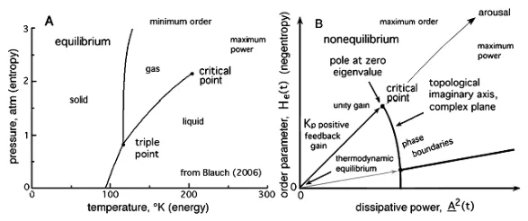
Hình 12 (A) giản đồ pha thông thường tại trạng thái cân bằng, từ [8]. (B) bằng phép tương tự với vật chất vật lý, một giản đồ pha được đề xuất cho động lực học vỏ não. Ở xa trạng thái cân bằng, các mức độ trật tự và công suất được hình dung là tăng lên cùng nhau khi mức độ thức tỉnh tăng lên (Hình 1). Điểm tới hạn và trục ảo được lấy từ mặt phẳng phức (Hình 9). Sự thức tỉnh từ gây mê sâu (trạng thái “vòng hở” với ECoG phẳng, KO trong Hình 4) dẫn đến sự ổn định hóa tại một trạng thái giả cân bằng được duy trì bởi các thời kỳ trơ của các tương tác kích thích giữa các tế bào tháp (mitral). Phép biến đổi từ A sang B là bằng cách tịnh tiến gốc tọa độ trong B tới điểm tới hạn được hiển thị trong A và xây dựng hai chiều trực giao mới cho sự thay đổi: tốc độ tăng thông tin thực dụng (negentropy) như một chỉ số vô hướng của trật tự trên trục tung và tốc độ tiêu tán năng lượng tự do (công suất) trên trục hoành. Hệ thống đóng. Mức năng lượng hiển thị trên trục hoành được đánh chỉ số bằng nhiệt độ. Mức độ trật tự hiển thị trên trục tung được đo bằng áp suất, thể tích hoặc entropy. Trật tự cực đại xảy ra ở năng lượng cực tiểu. Ba pha được phân tách bởi các ranh giới pha gặp nhau tại một điểm ba. Tuy nhiên, ranh giới pha giữa lỏng và khí kết thúc tại một điểm tới hạn, vượt ra ngoài điểm đó pha của các thành phần là không xác định.
Não bộ là các hệ mở, động lực học liên tục tiêu tán năng lượng tự do [33, 60] trong việc đốt cháy glucose; não bộ chiếm 5% khối lượng cơ thể nhưng tiêu thụ 20% tỷ lệ trao đổi chất cơ bản. Hai biến trạng thái mới là cần thiết: tốc độ tiêu tán năng lượng (công suất) trên trục hoành, và tốc độ tăng thông tin (negentropy) trên trục tung, đánh chỉ số cho trật tự nổi lên trong các cấu trúc tiêu tán [52]. Trong hiển thị động lực học, trạng thái cân bằng tại tính tới hạn xuất hiện như một điểm tại gốc của các biến trạng thái mới. Trạng thái cân bằng được tiếp cận khi chết não và trong trạng thái không tương tác bị áp đặt bởi gây mê sâu (Hình 4, KO). Khi hồi phục từ gây mê, mức độ trật tự và tốc độ tiêu tán năng lượng tăng lên cùng nhau (đường chéo, Hình 12, B).
Nhiệt độ não không phù hợp làm chỉ số của công suất, bởi vì chim và động vật có vú sử dụng phản hồi cân bằng nội môi để giữ nhiệt độ não trong một phạm vi hẹp. Một chỉ số hữu ích của công suất là bình phương trung bình biên độ giải tích, A2(t), bởi vì biên độ ECoG phụ thuộc vào mật độ dòng điện qua điện trở suất ngoại bào tương đối cố định của mô vỏ não. Bình phương của dòng điện hoặc điện thế tỷ lệ thuận với công suất tiêu thụ bởi các tế bào thần kinh tạo ra các điện thế đuôi gai. Sự tiêu tán này là cơ sở cho việc chụp ảnh hoạt động não bằng cách đo lưu lượng máu não sử dụng fMRI, SPECT, PET, v.v., bởi vì 95% năng lượng não được tiêu thụ bởi quá trình trao đổi chất oxy hóa trong các đuôi gai, chỉ 5% trong các sợi trục.
Mức độ trật tự trên trục tung được đánh chỉ số bằng tỷ số vô hướng xác định thông tin thực dụng, He(t). Biến trạng thái này làm rõ tiền đề rằng trật tự trong các cấu trúc tiêu tán tăng lên khi công suất tăng [52]. Vỏ não vận hành như một hệ mở ở xa trạng thái cân bằng (Hình 12, B), nhưng nó tự ổn định trong khi chuyển qua một tập hợp các trạng thái bằng các quá trình được gọi dưới nhiều tên khác nhau như quay quanh quỹ đạo trong tính siêu ổn định [42, 57], tính lang thang hỗn loạn [40]; tính kết hợp thoáng qua trong các trạng thái cơ bản không tương đương đơn nhất [33]; và các sự rẽ nhánh [35] giữa các cấp độ phân cấp bằng thẩm thấu thần kinh [Chương của Kozma] thông qua một sự mở rộng của lý thuyết đồ thị ngẫu nhiên [42]. Trong mọi công thức, độ lớn của hoạt động nền mà tại đó vỏ não được ổn định có thể thay đổi; nó thường đồng biến thiên với mức độ thức tỉnh (Hình 1). Trong vỏ não, tính ổn định được duy trì bởi các thời kỳ trơ, sao cho dù sự gia tăng thức tỉnh lớn đến đâu, đầu ra của các quần thể KIe vẫn tự ổn định ở độ lợi phản hồi đơn vị. Cực tại gốc của mặt phẳng phức (tại gốc trong các Hình 6, 7, 8 và 9) tương ứng với điểm tới hạn trên đường thẳng hướng lên chéo (Hình 12, B), do đó tính siêu ổn định của vỏ não có thể được mô tả như một trường hợp của tính tới hạn tự tổ chức (SOC). Nhờ đó, trạng thái ổn định có thể được mô tả như một pha trong một hệ thống ở trạng thái giả cân bằng, và sự chuyển trạng thái có thể được gọi là một sự chuyển pha. Sự phân định bởi trục ảo vốn có thể tiếp cận được đối với phân tích tuyến tính từng khúc giữa các trạng thái ổn định và không ổn định (các Hình 6, 7, 8 và 9) ở nửa trên của mặt phẳng phức được thấy là tương ứng với một ranh giới pha (Hình 12, B) giữa các trạng thái tiếp nhận và truyền phát lưỡng ổn định (Hình 13). Một ranh giới pha thứ hai vốn không thể tiếp cận đối với phân tích tuyến tính phân tách một miền pha của cơn động kinh cục bộ phức tạp tự duy trì [16].
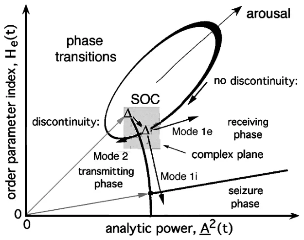
Hình 13 Một giản đồ pha của động lực học vỏ não mới được xây dựng trong hệ tọa độ gồm mức độ trật tự được cho bởi tốc độ thay đổi trong tham số trật tự, He(t), là biến phụ thuộc và công suất giải tích trung bình, A2(t), là biến độc lập. Vùng xám ở giữa cho thấy không gian con đã tuyến tính hóa của mặt phẳng phức trong các Hình 6, 7, 8 và 9
Những đặc tính này dẫn đến một quan điểm về tri giác như một quá trình tuần hoàn (hình elip trong Hình 13). Chu trình bắt đầu với vỏ não ở trạng thái tiếp nhận cùng một cảnh quan bộ hút đã được thiết lập sẵn bởi việc học từ đầu vào và được lựa chọn bởi hệ viền trong quá trình tiền hướng tâm [39]. Cực tại gốc tọa độ biểu diễn bộ hút điểm ổn định, khác không của tập hợp KIe (tại gốc trong các Hình 6, 7, 8 và 9, phải) xác định vị trí của điểm tới hạn được duy trì bởi SOC, vốn nằm trên đường 45° biểu diễn trật tự tăng lên cùng với công suất hoạt động thần kinh tăng lên phù hợp với “trật tự từ hỗn loạn” của Prigogine [52] trong sự hình thành các “cấu trúc tiêu tán” và “nguyên lý nô dịch” của Haken [35]. Ba pha được hình dung trong một cách tiếp cận đơn giản hóa: tiếp nhận, truyền phát và động kinh. Điểm đặt (Hình 13, dưới) tương ứng với hình chữ nhật nhỏ ở giữa trong các Hình 7, 8 và 9 được giả định là không nằm trên đường chéo hướng lên mà nằm bên dưới đường thẳng đó. Nó bị dịch chuyển trong các vùng vỏ não giác quan bởi đầu vào nền từ các thụ thể giác quan, và trong các vùng vỏ não khác bởi đầu vào nền từ các phần khác của não. Sự dịch chuyển (mũi tên nhỏ hướng xuống giữa các tam giác trong Hình 13) phản ánh sự giảm độ lợi xuống dưới đơn vị đối với các đáp ứng xung nhỏ nhất có thể quan sát được (Hình 6, A). Sự dịch chuyển biểu diễn trật tự giảm và công suất tăng.
Quỹ đạo nghiệm ở Chế độ 1e được biểu diễn bởi mũi tên hướng sang phải gần như nằm ngang từ điểm đặt (dưới) chỉ ra công suất tăng và sự gia tăng nhỏ về trật tự với các điện thế gợi thuận chiều vượt trên phạm vi hoạt động nền. Mũi tên màu cam hướng xuống chỉ quỹ đạo nghiệm ở Chế độ 1i, cho thấy công suất tăng và trật tự giảm đi kèm với các đáp ứng xung liên quan đến sự ức chế mạnh. Mũi tên màu đỏ tía hướng sang trái chỉ quỹ đạo nghiệm ở Chế độ 2, vốn cắt qua ranh giới pha (trục ảo) trong một sự chuyển pha. Chế độ 2 xuất hiện đối nghịch hoàn toàn với Chế độ 1e khi cho thấy sự giảm công suất cùng với một sự giảm nhỏ về trật tự, có xu hướng tiến tới mất ổn định.
Đặc điểm đáng chú ý nhất của giản đồ trong Hình 13 là sự mô tả về chuyển pha trong một hành vi tri giác như bắt đầu bằng việc giảm công suất và giảm trật tự. Đặc điểm này đi ngược lại trực giác, bởi vì tri giác thường được hình dung là kết quả từ tác động của một loạt xung giác quan làm tăng công suất và áp đặt trật tự tăng lên bằng cách bơm thông tin từ một kích thích. Chắc chắn điều đó có diễn ra, nhưng giản đồ pha bổ sung một chiều kích khác cho câu chuyện, như sau. Sự kiện khởi phát một chuyển pha là một sự sụt giảm đột ngột trong công suất giải tích của hoạt động nền xuống gần bằng không, như được thấy xảy ra trong Hình 10, A, và như được mô phỏng trong B. Sự sụt giảm này gây ra một trạng thái bất định ngắn ngủi, trong đó biên độ của ECoG gần bằng không và pha của ECoG không xác định. Nếu một loạt xung do kích thích gây ra đến tại hoặc ngay trước trạng thái này, thì vỏ não theo Chế độ 2 có thể bị đầu vào đẩy qua ranh giới pha. Các quỹ đạo nghiệm Chế độ 2 trong Hình 9 cho thấy đầu vào ngoại sinh (phân biệt với hoạt động nội sinh) làm tăng biên độ và cũng làm tăng tính mất ổn định bằng cách đưa vỏ não tiến gần hơn và vượt qua trục ảo. Biên độ phản ứng không phụ thuộc vào biên độ đầu vào mà phụ thuộc vào trạng thái nội tại của vỏ não, cụ thể là mức độ suy giảm trong công suất và trật tự của nhiễu nâu nền.
Nếu chuyển pha xảy ra, nó đặt lại tần số mang của dao động thông qua một sự gián đoạn trong pha giải tích. Sau đó, dao động hội tụ về một tần số chung (Hình 9) như được thể hiện bởi sự giảm SDX(t) trong Hình 10, A. Tiếp theo sau đó lần lượt là sự tái đồng bộ hóa như được thể hiện bởi Re(t) tăng lên trong Hình 11, B; trật tự tăng lên khi một mẫu hình ổn định xuất hiện với De(t) giảm xuống trong Hình 11, A; và cuối cùng là công suất trung bình A2(t) tăng lên trong Hình 11, A. Sau khi công suất đạt đỉnh, vỏ não trở lại trạng thái tiếp nhận của nó bằng một chuyển pha thứ hai không có sự gián đoạn trong pha dao động. Theo giả thuyết này, chu trình cho cơ hội trải qua một chuyển pha lặp lại không tuần hoàn ở một tốc độ nội tại trong dải theta. Việc hiện thực hóa một chuyển pha đòi hỏi sự hiện diện của một đợt tăng đột biến đầu vào tới vỏ não. Trong mô hình điều kiện hóa thực nghiệm được sử dụng trong nghiên cứu này, đợt tăng đột biến đầu vào là một loạt xung giác quan được đưa đến vỏ não bởi một hành động quan sát có chủ đích, vì vậy hình elip gamma trong Hình 13 có thể được gọi một cách chính xác là một biểu diễn của quỹ đạo thần kinh của một chu trình hành động – tri giác [17, 19, 28]. Có thể hình dung đợt tăng đột biến đầu vào cũng có thể được cung cấp trong các vùng vỏ não giác quan bởi sự truyền dẫn vỏ não – vỏ não từ hệ viền. Một chuyển pha như vậy có thể làm nền tảng cho sự hình thành các bó sóng beta trong một chu trình hành động – tri giác “ảo”.
7 Kết luận và Tóm tắt
Ý nghĩa của sự sụt giảm công suất trước khi khởi phát một chuyển pha có thể được thấy ở thực tế là một kích thích có điều kiện được dự đoán thường là một tín hiệu rất yếu nằm lẫn trong nhiễu ngữ cảnh. Loạt xung hướng tâm kích hoạt vỏ não giác quan và hiện thực hóa cảnh quan bộ hút biểu thị một số phạm trù CS khả dĩ được dự đoán trong một hành động quan sát có chủ đích. Một tập hợp tế bào thần kinh Hebb được hình thành trong quá trình học tập trước đó chi phối mỗi bộ hút. Số lượng tương đối ít các điện thế hoạt động được gửi bởi các thụ thể liên quan có thể châm ngòi cho một trong các tập hợp tế bào, vốn có thể dẫn hướng vỏ não vào lưu vực hút tương ứng. Khoảnh khắc lựa chọn đó có thể được hình dung là được thực hiện một cách tối ưu khi hoạt động nền bị dập tắt, và đầu ra của một tập hợp Hebb liên quan có tỷ lệ tín hiệu trên nhiễu cực đại trong việc lựa chọn một lưu vực để dẫn dắt toàn bộ vỏ não giác quan. Khi công suất nền sau đó tăng lên, nó được in dấu bởi mẫu hình AM do một bộ hút trong cảnh quan cung cấp. Công suất không phải do đầu vào giác quan cung cấp; nó được cung cấp bởi sự kích thích lẫn nhau nội tại. Gai rỗng (null spike) có thể được ví như mắt bão—một khoảng lặng thoáng qua mở ra khả năng cho một sự thay đổi về hướng chuyển động. Gai rỗng tiếp theo dập tắt hoạt động vỏ não và giải phóng động lực học khỏi bộ hút khi mẫu hình AM biến mất.
Gai rỗng trong hoạt động nhiễu nâu đã lọc thông dải được hình dung như một màn trập [43] làm trắng xóa nền nội tại. Ở biên độ giải tích rất thấp khi pha giải tích không xác định, có thể quỹ đạo hệ thống tiếp cận một điểm kỳ dị làm tăng khả năng để một đầu vào giác quan ngoại sinh nhỏ đặt lại hoạt động nền trong một khung hình mới. Gai rỗng không đủ tiêu chuẩn là một cái cổng (gate), bởi vì đầu vào giác quan không bị chặn lại hay giữ lại, và mẫu hình AM trong khung hình tiếp theo, nếu có, được hình thành bởi sự tái tổ chức hoạt động hiện có thông qua việc lựa chọn bộ hút, chứ không phải bởi sự dẫn dắt hoạt động vỏ não bằng đầu vào như trong mô hình “xử lý thông tin”. Gai rỗng không phải là một bộ quét (scanner) [61], bởi vì việc lựa chọn một lưu vực hút diễn ra bằng sự cạnh tranh giữa các tập hợp tế bào trong không gian trạng thái chứ không phải bằng một cuộc tìm kiếm một mô-đun trong vỏ não. Nó không thực sự là một chiếc đồng hồ, bởi vì sự tái diễn của các gai rỗng là không tuần hoàn trong một phạm vi giới hạn, và sự hình thành một mẫu hình AM đòi hỏi một yếu tố ngoại sinh, tức đầu vào như từ một cái hít mũi hoặc một chuyển động giật mắt [58]. Việc đóng mở cổng, quét và định thời đồng hồ [46] được hình dung tốt hơn là các hoạt động đồi thị – vỏ não cấp độ trung mô [Chương của Bressler], trong khi việc định thời chính xác của chuyển pha được thực hiện bên trong các quần thể thần kinh vốn sẽ xây dựng nên bó sóng mang một mẫu hình AM. Việc khám phá sâu hơn sẽ đòi hỏi phát triển một nền tảng toán học cho gai rỗng, vốn hiện chưa tồn tại. Hai cơ sở đầy hứa hẹn cho nghiên cứu được dự kiến nằm ở lý thuyết đồ thị ngẫu nhiên [9, 42] và lý thuyết trường lượng tử [33, 60]. Đây là những cách tiếp cận được sử dụng rộng rãi để mô tả các quá trình mà qua đó các sự kiện vi mô có thể được nâng cấp quy mô thành các mẫu hình vĩ mô trong các hệ thống phức tạp.
Hình 13 cung cấp cơ sở cho một đồ thị phức tạp hơn để tổng hợp và hiển thị thêm dữ liệu và các khái niệm suy ra từ các nghiên cứu về động lực học phi tuyến của vỏ não. Dạng đơn giản này có thể được mở rộng để bao gồm dữ liệu bổ sung từ các nghiên cứu dược lý. Ví dụ, việc gây mê bằng barbiturat là do tăng cường ức chế được tái lập bởi quỹ đạo nghiệm ở Chế độ 1i. Các quỹ đạo nghiệm tương tự thu được bằng cách giảm hoạt động nền với barbiturat hoặc bằng cách tăng cường độ xung (Hình 8). Ở mức độ làm phẳng ECoG cực hạn, độ lợi kp = 0, và một bộ hút điểm với biên độ bằng không được bộc lộ [32] tạo ra đáp ứng xung vòng hở (Hình 4, KO). Một sự mất ổn định được biểu hiện trong các thoi barbiturat: các đợt dao động ngắn ở dải theta [14]. Các giai đoạn của giấc ngủ có thể được biểu diễn bằng những pha khác nữa.
Sự kích thích tần số cao (tetanization) ngắn ngủi vào dải khứu giác bên ở cường độ siêu cực đại có thể gây ra một cơn động kinh cục bộ phức tạp kèm theo vắng ý thức và sóng-gai 3/giây [16]. Mẫu hình hoạt động tự chủ này ngụ ý sự tồn tại của ranh giới pha dưới phân tách các trạng thái tiếp nhận và truyền phát khỏi một miền động kinh với công suất rất cao và trật tự tối thiểu, vốn được tiếp cận một cách nghịch lý bằng cách nâng hoạt động của các tế bào thần kinh ức chế lẫn nhau lên cường độ cao. Đáng chú ý là tốc độ lặp lại gai động kinh cũng nằm trong cùng dải theta như gai rỗng. Sóng-gai động kinh sẽ tạo thành một hình elip lớn hơn nhiều (không hiển thị).
Hình elip bình thường có thể được coi là hình chiếu 2-D của một hình xuyến (torus), biểu hiện một bộ hút bán tuần hoàn, trong đó tần số thấp của sự lặp lại đợt phát xung ở dải theta được biểu diễn bởi đường kính của hình xuyến, và tần số cao của sóng mang đợt phát xung ở dải beta hoặc gamma được biểu diễn bởi độ dày của hình xuyến. Hình xuyến đến lượt nó có thể được coi là hình chiếu của một đường xoắn ốc kéo dài vào miền thời gian trong không gian 3-D. Nhiều hình elip có thể dùng để biểu diễn các cảnh quan bộ hút hỗn loạn nhiều chiều [32], các hệ thống ký ức động trong lý thuyết thẩm thấu thần kinh [56], và nhiều trạng thái cơ bản được mô hình hóa bởi lý thuyết trường lượng tử tiêu tán [16, 60]. Ngay lập tức hơn, cần có một nền tảng toán học vững chắc vượt ra ngoài ODE, để suy ra và mô tả chính xác hơn các dạng của các chu trình hành động – tri giác thần kinh và các ranh giới pha mà chúng đi qua, những thứ mà ODE không hoàn toàn phù hợp.
Tóm lại, hành khứu giác, nhân và vỏ não khứu giác cấu thành một hệ thống bán tự chủ trong mỗi bán cầu đại não, tiếp nhận thông tin chất tạo mùi, phân loại một tri giác mùi bằng cách khái quát hóa và trừu tượng hóa, và truyền phát tri giác đó rộng khắp qua não trước. Hình thức của tri giác là một khung hình được xây dựng và mang bởi một bó sóng với một dao động mang “hỗn loạn” không tuần hoàn ở dải gamma. Nội dung được biểu hiện trong một mẫu hình không gian của điều biến biên độ (AM) của sóng mang được xác định bởi các synap đã biến đổi giữa các tế bào mitral hành khứu giác tạo thành các tập hợp tế bào thần kinh Hebb trong quá trình học tập củng cố. Mỗi tập hợp tế bào cho một chất tạo mùi được phân biệt sẽ dẫn hướng hành khứu giác tới một mẫu hình AM được xây dựng bởi một bộ hút “hỗn loạn”. Tập hợp các phạm trù mùi đã học được lưu giữ dưới dạng một cảnh quan bộ hút. Mỗi bộ hút được bao quanh bởi một lưu vực hút; các quá trình khái quát hóa và trừu tượng hóa xảy ra khi hệ thống hội tụ về bộ hút, bất kể một kích thích đặt hệ thống vào đâu trong một lưu vực. Ba yêu cầu được đáp ứng bởi hệ khứu giác trong quá trình hình thành tri giác là một sự chuyển trạng thái từ trạng thái tiếp nhận sang trạng thái truyền phát, một sự chuyển khác để quay trở lại, và một yêu cầu thứ ba để lấy mẫu lặp đi lặp lại môi trường khứu giác: một màn trập.
Động lực học trong các hệ tri giác thị giác, thính giác và cảm giác thân thể chia sẻ những đặc tính này. Trong Chương này, bằng chứng từ ECoG của vỏ não cổ và vỏ não mới được dùng để mô tả các cơ chế thần kinh tạo ra và ổn định các sóng mang vỏ não; cho phép các chuyển trạng thái; và cung cấp một màn trập để kết thúc các khung hình cũ và khởi tạo các khung hình mới theo chuỗi điện ảnh trong mọi hệ giác quan. Người ta giả định rằng một tri giác chỉ hình thành một bó sóng khi hoạt động nền nội sinh suy giảm ngắn ngủi trong một “gai rỗng” (null spike), vốn cung cấp tỷ lệ tín hiệu trên nhiễu cao mà một đợt hoạt động vỏ não được dẫn dắt bởi đầu vào chuyển tiếp từ các thụ thể giác quan cần để lựa chọn và khởi tạo một khung hình mới. Chuỗi không tuần hoàn của các gai rỗng cung cấp màn trập vốn là một điều kiện cần dù chưa đủ cho quá trình điện ảnh của tri giác.
Lời cảm ơn Tôi xin bày tỏ lòng biết ơn tới Mark D. Holmes và Ceon Ramon, Đại học Washington, Seattle WA và Sampsa Vanhatalo, Đại học Helsinki, Phần Lan về dữ liệu và mô hình hóa sử dụng 64 kênh của Hệ thống ghi 256 kênh System 200 do Don Tucker, Electrical Geodesics Inc., Eugene OR cung cấp. Đối với những hiểu biết sâu sắc mang tính phê bình, tôi xin cảm ơn các nhà vật lý Giuseppe Vitiello, Đại học Salerno và Michael Stringer, Đại học Northwestern, và các nhà toán học Robert Kozma, Đại học Memphis và Béla Bollobás, Đại học Cambridge. Một phiên bản sơ bộ của Chương này xuất hiện trong Kỷ yếu IJCNN’07 [23].
Tài liệu tham khảo
1. Neurodynamics. An Exploration of Mesoscopic Brain Dynamics. London: Springer, 2001. 2. D. J. Amit. The hebbian paradigm reintegrated: Local reverberations as internal representations. Behavioral and Brain Science, 18:617–657, 1995. 3. H. Atmanspacher and H. Scheingraber. Pragmatic information and dynamical instabilities in a multimode continuous-wave dye laser. Canadian Journal of Physics, 68:728–737, 1990. 4. P. Bak, C. Tang C, and K. Wiesenfeld. Self-organized criticality: an explanation of 1/f noise. Physical Review Letters, 59:364–374, 1987. 5. J. M. Barrie, W. J. Freeman, and M. Lenhart. Modulation by discriminative training of spatial patterns of gamma eeg amplitude and phase in neocortex of rabbits. Journal of Neurophysiology, 76:520–539, 1996.
6. E. Basar. Eeg - brain dynamics. Amsterdam: Elsevier, 1980. 7. E. Basar. Brain function and oscillations. Berlin: Springer-Verlag, 1998. 8. D. N. Blauch. Chemistry experiments & exercises: Phase changes. 2006. 9. B. Bollobás. Random graphs, cambridge studies in advanced mathematics 2nd ed. Cambridge UK: Cambridge University Press, 1985/2001. 10. B. Bollobás and O. Riordan. Results on scale-free random graphs. Weinhiem: Wiley-VCH, 2003. 11. S. L. Bressler and J. A. S. Kelso. Cortical coordination dynamics and cognition. Trends in Cognitive Science, 5:26–36, 2001. 12. C. L. Chapman, P. D. Bourke, and J. J. Wright. Spatial eigenmodes and synchronous oscillation: coincidence detection in simulated cerebral cortex. Journal of Mathematical Biology, 45:57–78„ 2005. 13. J. D. Emery and W. J. Freeman. Pattern analysis of cortical evoked potential parameters during attention changes. Physiololgy and Behavior, 4:67–77, 1969. 14. W. J. Freeman. Mass action in the nervous system. New York: Academic Press, 1975. 15. W. J. Freeman. Nonlinear gain mediating cortical stimulus-response relations. Biological Cybernetics, 33:237–247, 1979. 16. W. J. Freeman. Petit mal seizure spikes in olfactory bulb and cortex caused by runaway inhibition after exhaustion of excitation. Brain Research Reviews, 11:259–284, 1986. 17. W. J. Freeman. Societies of Brains. A Study in the Neuroscience of Love and Hate. Mahwah NJ: Lawrence Erlbaum Assoc., 1995. 18. W. J. Freeman. Origin, structure, and role of background eeg activity. part 3. neural frame classification. Clinical. Neurophysiology, 116(5):1118–1129, 2005. 19. W. J. Freeman. Definitions of state variables and state space for brain-computer interface. part 1. multiple hierarchical levels of brain function. Cognitive Neurodynamics, 1(1): 3–14, 2006. 20. W. J. Freeman. Origin, structure, and role of background eeg activity. part 1. phase. Clinical. Neurophysiology, 115:2077–2088, 2006. 21. W. J. Freeman. Origin, structure, and role of background eeg activity. part 2. amplitude. Clinical. Neurophysiology, 115:2089–2107, 2006. 22. W. J. Freeman. Origin, structure, and role of background eeg activity. part 4. neural frame simulation. Clinical. Neurophysiology, 117(3):572–589, 2006. 23. W. J. Freeman. Cortical aperiodic ‘clock’ enabling phase transitions at theta rates. Proceedings, International Joint Conference on Neural Networks (IJCNN), 2007. 24. W. J. Freeman and B. Baird. Relation of olfactory eeg to behavior: Spatial analysis. Behavioral Neuroscience, 101:393–408, 1987. 25. W. J. Freeman and B. C. Burke. A neurobiological theory of meaning in perception. part 4. multicortical patterns of amplitude modulation in gamma egg. International Journal of Bifurcation and Chaos, 13:2857–2866, 2003. 26. W. J. Freeman, B. C. Burke, and M. D. Holmes. Aperiodic phase re-setting in scalp eeg of beta-gamma oscillations by state transitions at alpha-theta rates. Human Brain Mapping, 19(4):248–272, 2003. 27. W. J. Freeman, B. C. Burke, M. D. Holmes, and S. Vanhatalo. Spatial spectra of scalp eeg and emg from awake humans. Clinical. Neurophysiology, 114:1055–1060, 2003. 28. W. J. Freeman, G. Gaál, and R. Jornten. A neurobiological theory of meaning in perception. part 3. multiple cortical areas synchronize without loss of local autonomy. International Journal of Bifurcation and Chaos, 13:2845–2856, 2003. 29. W. J. Freeman and K. Grajski. Relation of olfactory eeg to behavior: Factor analysis. Behavioral Neuroscience, 100:753–763, 1987. 30. W. J. Freeman, M. D. Holmes, G. A. West GA, and S. Vanhatalo. Fine spatiotemporal structure of phase in human intracranial egg. Clinical Neurophysiology, 117: 1228–1243, 2006. 31. W. J. Freeman and L. J. Rogers. A neurobiological theory of meaning in perception. part 5. multicortical patterns of phase modulation in gamma eeg. International Journal of Bifurcation and Chaos, 13:2867–2887, 2003.
32. W. J. Freeman and W. Schneider. Changes in spatial patterns of rabbit olfactory eeg with conditioning to odors. Psychophysiology, 19:44–56, 1982. 33. W. J. Freeman and G. Vitiello. Nonlinear brain dynamics as macroscopic manifestation of underlying many-body field dynamics. Physics of Life Reviews, 3:93–118, 2006. 34. E. Gordon. Integrative neuroscience. Sydney: Harwood Academic, 2000. 35. H. Haken. What can synergetics contribute to the understanding of brain functioning? C. Uhl (Ed.) Berlin: Springer-Verlag, 1999. 36. R. C. Hwa and T. Ferree. Scaling properties of fluctuations in the human electroencephalogram. Physics Review, 66, 2002. 37. L. Ingber. Statistical mechanics of multiple scales of neocortical interactions. Nunez PL (ed.) Neocortical Dynamics and Human EEG Rhythms, New York: Oxford University Press, pp. 628–681, 1995. 38. H. J. Jensen. Self-organized criticality: Emergent complex behavior in physical and biological systems. New York: Cambridge University Press, 1998. 39. L. M. Kay and W. J. Freeman. Bidirectional processing in the olfactory-limbic axis during olfactory behavior. Behavioral Neuroscience, 112:541–553, 1998. 40. J. A. S. Kelso. Dynamic patterns: The self-organization of brain and behavior. Cambridge: MIT Press, 1995. 41. R. Kozma and W. J. Freeman. Chaotic resonance: Methods and applications for robust classification of noisy and variable patterns. International Journal of Bifurcation and Chaos, 10:2307–2322, 2001. 42. R. Kozma, M. Puljic, P. Balister, B. Bollobás, and W. J. Freeman. Phase transitions in the neuropercolation model of neural populations with mixed local and non-local interactions. Biological Cybernetics, 92:367–379, 2005. 43. K. S. Lashley. Brain Mechanisms and Intelligence. Chicago IL: University of Chicago Press, 1929. 44. D. T. J. Liley, M. P. Dafilis, and P. J. Cadusch. A spatially continuous mean field of electrocortical activity. Network: Computational Neural Systems, 13:67–113, 2002. 45. K. Linkenkaer-Hansen, V. M. Nikouline, J. M. Palva, and R. J. Iimoniemi. Long-range temporal correlations and scaling behavior in human brain oscillations. Journal of Neuroscience, 15:1370–1377, 2001. 46. M. S. Matell and W. H. Meck. Neuropsychological mechanisms of interval timing behavior. BioEssays, 22(1):94–103, 2000. 47. M. Merleau-Ponty. Phenomenology of perception. New York: Humanities Press, 1945/1962. 48. F. W. Ohl, H. Scheich, and W. J. Freeman. Change in pattern of ongoing cortical activity with auditory category learning. Nature, 412:733–736, 2001. 49. J. Orbach. The neuropsychological theories of lashley and hebb. Psycoloquy, 10(29), 1999. 50. J. Panksepp. Affective neuroscience: The foundations of human and animal emotions. Oxford UK: Oxford University Press, 1998. 51. E. Pereda, A. Gamundi, R. Rial, and J. Gonzalez. Non-linear behavior of human eeg – fractal exponent versus correlation dimension in awake and sleep stages. Neuroscence Letters, 250:91–94, 1998. 52. I. Prigogine. From being to becoming: Time and complexity in the physical sciences. San Francisco. W. H. Freeman, 1980. 53. G. Viana Di Prisco and W. J. Freeman. Odor-related bulbar eeg spatial pattern analysis during appetitive conditioning in rabbits. Behavioral Neuroscience, (99):962–978, 1985. 54. O. Sacks. In the river of consciousness. New York Book Revue, 51(1), 2004. 55. M. Schroeder. Fractals, chaos, power laws. San Francisco: W. H. Freeman, 1991. 56. L. Siklós, M. Rickmann, F. Joó, W. J. Freeman, and J. R. Wolff JR. Chloride is preferentially accumulated in a subpopulation of dendrites and periglomerular cells of the main olfactory bulb in adult rats. Neuroscience, 64:165–172, 1995. 57. C. A. Skarda and W. J. Freeman. How brains make chaos in order to make sense of the world. Behavioral and Brain Science, 10:161–195, 1987. 58. L. W. Stark, C. M. Privitera, H. Yang, M. Azzariti, Y. F. Ho, T. Blackmon, and D. Chernyak. Representation of human vision in the brain: How does human perception recognize images? Journal of Electronic Imaging, 10(1):123–151, 2001.
59. I. Tsuda. Towards an interpretation of dynamic neural activity in terms of chaotic dynamical systems. Behavioral and Brain Sciences, 24:793–810, 2001. 60. G. Vitiello. My double unveiled. Amsterdam: John Benjamins, 2001. 61. W. G. Walter. The Living Brain. New York: W. W. Norton, 1953. 62. X. F. Wang and G. R. Chen. Complex networks: small-world, scale-free and beyond. EEE Circuits and Systems, 31:6–20, 2003. 63. J. J. Wright, C. J. Rennie, G. J. Lees, P. A. Robinson, P. D. Bourke, C. L. Chapman, E. Gordon, and D. L. Rowe. Simulated electrocortical activity at microscopic, mesoscopic and global scales. Journal of Neuropsychopharmacology, 28:S80–S93, 2003.
Hướng tới một Khoa học Thần kinh Bổ sung: Động lực học Phối hợp Siêu ổn định của Não bộ
J. A. Scott Kelso và Emmanuelle Tognoli
Tóm tắt Tính siêu ổn định đã được đề xuất như một nguyên lý mới của chức năng hành vi và não bộ và có thể chỉ ra con đường dẫn tới một khoa học thần kinh thực sự mang tính bổ sung. Từ động lực học phối hợp sơ cấp, chúng tôi chỉ ra một cách tường minh rằng tính siêu ổn định là kết quả của một sự phá vỡ đối xứng gây ra bởi sự tương tác tinh tế của hai lực: xu hướng các thành phần liên kết lại với nhau và xu hướng các thành phần biểu hiện hành vi độc lập nội tại của chúng. Chế độ siêu ổn định dung hòa những xu hướng vốn đã được biết đến rộng rãi của các vùng não chuyên biệt nhằm biểu hiện tính tự chủ của chúng (sự phân tách) và xu hướng các vùng đó phối hợp cùng nhau như một sự hợp lực (sự tích hợp). Tích hợp ∼ phân tách chỉ là một trong những cặp bổ sung (được ký hiệu bằng dấu ngã (∼)) nổi lên từ khoa học về động lực học phối hợp. Chúng tôi thảo luận về tính siêu ổn định trong não bộ bằng cách mô tả các điều kiện thuận lợi tồn tại cho sự xuất hiện của nó và bằng cách suy ra một số dự đoán cho việc đặc trưng hóa thực nghiệm của nó trong các bản ghi sinh lý thần kinh.
Từ khóa: Não bộ · Tính siêu ổn định · Bản chất bổ sung · Động lực học phối hợp · Ý thức
1 Lời mở đầu
Bài tiểu luận này bắt đầu với một số cân nhắc đối với khoa học nói chung và khoa học thần kinh tính toán nhận thức nói riêng. Sau đó, nó tập trung vào một mô hình cụ thể, có cơ sở thực nghiệm về chức năng hành vi và não bộ, vốn xuất phát từ khung lý thuyết của động lực học phối hợp. Mô hình này chứa đựng một số đặc tính hấp dẫn, một trong số đó là tính siêu ổn định, đã được ca ngợi như một nguyên lý mới của chức năng não bộ. Thuật ngữ tính siêu ổn định đang ngày càng phổ biến; nó rất nổi tiếng trong vật lý và đã được nhiều nhà khoa học thần kinh danh tiếng đón nhận. Như chúng tôi giải thích, điều quan trọng không phải là bản thân từ ngữ đó, mà là ý nghĩa của từ ngữ đó đối với việc thấu hiểu chức năng não bộ và nhận thức. Trong động lực học phối hợp, tính siêu ổn định không phải là một khái niệm hay một ý tưởng, mà là một sự kiện nảy sinh như kết quả của bản chất tự tổ chức được quan sát thấy ở cả não bộ và hành vi. Cụ thể, tính siêu ổn định là kết quả của sự đối xứng bị phá vỡ trong phương trình pha tương đối biểu thị sự phối hợp